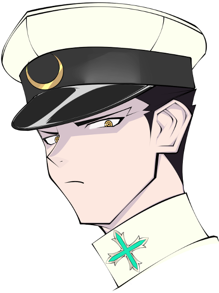
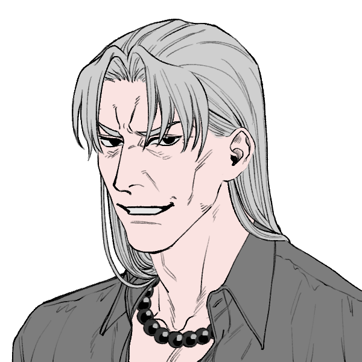
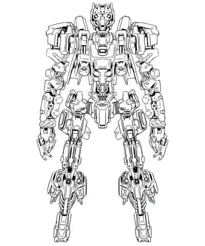

GM:雅
メインログ / 雑談ログ
キャラシート
PC1：星宮瑠璃 (キャラシート) PL：めい
PC2：喜咲悪ま (キャラシート) PL：がぶらす
PC3：内藤正吾 (キャラシート) PL：ふろずん
PC4：パララクス (キャラシート) PL：タンゴ
PC5：白鬼天道 (キャラシート) PL：いちま
目次
■プリプレイ
HO&PC紹介
■オープニングフェイズ
01 邂逅の時
02 覚醒の時
03 変遷の刻
04 審判の刻
■ミドルフェイズ
05 刻印を持つ者達
06 情報収集
07 情報共有
プリプレイ
GM :
では始めに自己紹介！PC1の星宮瑠璃ちゃんからどうぞ～
星宮瑠璃 :
はい！
星宮瑠璃 :
星宮瑠璃、16歳の女子高生！
星宮瑠璃 :
スターフェアリープロダクションというアイドル事務所に所属する、現在人気急上昇中のアイドルヒーローです！
星宮瑠璃 :
清楚でかわいいキラキラしたアイドルしてますが、アイドルなので猫を被ってます。
星宮瑠璃 :
本当の性格は気が強くて言動キツめで、自分は宇宙一のアイドルになると思ってるくらいの自信家です！
星宮瑠璃 :
シンドロームはキュマイラ/ブラックドッグのクロスブリードの白兵攻撃型で、復讐の刃で殴り返したりします。
星宮瑠璃 :
青い雷を纏った攻撃の軌跡が流星のように見えることから“ミーティア”のヒーローネームを名乗っています。でもアイドルなので本名も公開してます。
星宮瑠璃 :
あとは、まだ新人な上に特に知る機会も無かったので、ジャーム化の事実については知りません。オーヴァードは暴走までしかしないし、ジャームって言葉はヴィランが怪物化した俗称だと思ってます。
星宮瑠璃 :
それくらいヒーローとしてはルーキーだし、心の中では色々考えてる腹黒い性格してるけど、頑張ってヒーローします！よろしくおねがいします。
GM :
ありがとう！そんな瑠璃ちゃんのHOはこちら
■PC1用ハンドアウト
ロイス：カウンター・ジャッジ
ワークス/カヴァー:ヒーロー/自由
突如として、流星の如くアナタの元に現れた機械のRB。それはアナタに助けを求めてやってきた。
その依頼とは彼の本体を破壊すること、さもなくばヒーロー及び世界は破滅へと向かうという。
だが、彼との会話中にどこからともなく一閃の光線がアナタを貫き、謎の刻印が刻まれた。
「オマエ達ノ破滅マデ、アト24時間ダ。」
星宮瑠璃 :
流星の如くって書かれてただけで選んだHOだよ
GM :
そんな綺麗じゃない鉄の塊が落ちてきます。お楽しみに（？）
星宮瑠璃 :
実際の流れ星も塵とかが燃えてるだけのやつだしまあヨシ！楽しみにしていきます
GM :
イエイ！それじゃPC2の方へ移っていきましょう！
GM :
PC2の喜咲悪まちゃん、自己紹介どうぞ！
喜咲 悪ま :
えいさえいさ

喜咲 悪ま :
名前は【喜咲悪ま】、年齢は25歳！
元は名家の生まれだけれど、その髪色から疎まれてネグレクト！
そのままヴィランズイヤーを迎え、監禁されていた家から脱走した元ヴィランだよ！
喜咲 悪ま :
紆余曲折あり、現在は様々なヒーロー監修の元ヒーローやってるよ！
ヒーローネームはヴィラン時代から変わらず”悪噛合”ﾊﾞｯﾄﾞｴﾝｹﾞｪｼﾞ！
表情も怖けりゃ戦闘スタイルも怖いので人気が出るかどうかは…
喜咲 悪ま :
ヒーローとしてはまだペーペーだけど、オーヴァードとしての活動期間は長め
本当は色々もりもりの異形オーヴァードなんだけど、拘束着のおかげで人型を保ってるよ
喜咲 悪ま :
戦闘中には《異形の痕》を使用して背中からいろんなパーツがあふれ出ます ヒーローの絵面じゃないね
喜咲 悪ま :
現在の性格は優しくて賑やか、元ヴィランとは思えないほど接しやすい人柄をしているよ。《空の楽器》のおかげで会話もできる！イージーエフェクトは神
ただ物を知らない子ではあるから、色々シツレイをかます可能性もあるところだけ許してね
喜咲 悪ま :
シンドロームはエグザイル/ハヌマーンで、こちらも白兵型！
なんか全体のキャラシ見た感じ一番出力が低そうで不安を感じている
喜咲 悪ま :
そういう感じの子です。餌をあげると懐きます！！
よろしくお願いします！！
GM :
ありがとう！なんだか可愛い子だと感じてきております！
GM :
HOは2・3共通なので、PC3の紹介が終わったら貼ろうか！
GM :
それじゃ続いてPC3の内藤正吾くん！自己紹介お願いします！
内藤正吾 :
はいな！

内藤正吾 :
内藤 正吾(ナイトウ セイゴ)！ 夜来学園二年生！ 表情筋が死んでるステレオタイプな堅物男子！！
内藤正吾 :
かつてのNo.1ヒーロー"パラディン"に救われた過去があり、彼に憧れてヒーローになりました！！
内藤正吾 :
そんな訳で！ 彼の元サイドキックに因んだ"ホワイトナイト"というヒーロー名を名乗っています！
内藤正吾 :
また夜来学園では風紀委員を務めていて、秩序の象徴として、いつも純白の学ランを着ています！
※なお夜来学園の指定制服は黒系のブレザーだと思われます(RWのNPC欄を参照)
内藤正吾 :
戦闘では≪異形の刻印≫で得た三桁越えのHPを生かして≪マグネットフォース≫で仲間を庇ったり、
内藤正吾 :
現代の警棒の先祖と言われる捕り物道具"十手"を用いて、そこそこの威力の白兵戦を行ないます！
内藤正吾 :
自爆特攻の切札もあるので、様々なエフェクトで憧れのパラディンらしく動けたらいいかなって！
内藤正吾 :
そんなカンジです！ よろしくおねがいします！！
GM :
ありがとう！正統派委員長で憧れはパラディン……良いキャラだ……
GM :
そんな悪まちゃんと正吾くんのHOはこちら！
■PC2・PC3用ハンドアウト
ロイス:"ネクスト・オーヴァード・ジェネレーション"キャロライン・ハーネスト
ワークス/カヴァー:ヒーロー/自由
通称"NoG"と呼ばれるヒーロー専用の装備やヴィークルを開発している大企業。
アナタは"NoG"の代表であるキャロラインから一大プロジェクト発表会の護衛任務を依頼されたヒーローの一人である。
それはヴィランの存在が危ぶまれる程の超兵器"ティターン・カイロス"。その兵器を狙ったヴィランの襲撃から防衛して欲しいとのこと。
「この発明で世界は変わりますっ！」
喜咲 悪ま :
護衛任務、中々な選出ですよ
内藤正吾 :
委員長に元ヴィランの手綱を握らせよう、という考え方だったらバランスの取れた人選なのかもしれない
キャロライン :
私の独断と偏見でヒーローを選出しました
喜咲 悪ま :
『見る目あるネッ』
GM :
お褒め頂いた…！ということで次の自己紹介行ってみようか！
GM :
PC4のパーセクさん！どうぞ～！
パーセク :
全然紹介になってないSSを書いてきたよ！

noname :
──今より1ヶ月前。
夜空を1つの彗星が彩った。
一切予測されることなく現れ、前例のない虹色の尾を持つソレは、3日間の後に忽然と消え去った。
当初こそ大きな話題になったものの、一週間が経つ頃には誰も口にしなくなっていた。
最大のヒーローであったパラディンが消え去った影響で連日のように大型ヴィラン事件が発生している状況では仕方ないことと言えるだろう。
そして………
noname :
1週間前。とある昼下り。
駅前の大型ビジョンにヒーロー特集が映し出されている。
ユピテル :
「ハァイみんな、おまたせ〜！"ユピテルDO-5のNEW-HERO発掘！"のお時間よぉ〜！」
ユピテル :
「このコーナーは、最近新しく登録されたヒーローの中から、アタシが直感で『一味違うわ！』と思ったコを紹介するコーナーよぉ〜！今こんな時だからこそ、新しい風を感じちゃいましょ！！」
「ハァイカモン、NEW-HERO！！」
noname :
画面がスライドし、一人の男が映る。
新雪を思わせる白い髪、大地そのものを感じる褐色の肌、高貴さを灯す金の瞳。
少年、青年、中年、壮年。そのどれもが当てはまっていそうな、幼稚と老成が混じりあった顔つき。
彼の名は──
パーセク :
「余はパララクス・リヒトヤー・ユニーテ=アストロノミクⅡ世である！……気軽にパーセクと呼ぶがよいぞ！」
ユピテル :
「オーケイ、パーセク！それで……いきなりなんだけど。アナタ例の彗星に乗ってやってきたって聞いたのだけど、ホントなのぉ？」
パーセク :
「そうだぞ。《天彗》という名でな、余が作った舟である。星々の海を巡り、先日地球に帰ってきたばかりなのだ。」
ユピテル :
「WOW！ビッグスケールな話ね！……ところでアナタ、どこの生まれ？中東のお金持ちなのかしら？」
パーセク :
「いや、アトランティスだ。今から数えて約14000年前に沈んだ国でな、余は其処の王子であった。」
ユピテル :
「またどエライ回答が来たわね……みんな、着いて来れてる？一言にまとめると宇宙帰りの超古代人の王子様よ！」
noname :
そんな感じでインタビューは続き……
ウラシマ効果で現代まで生きてるだとか、光子ナノマシンがメイン装備だとかの話をした後、最後の質問へ。
ユピテル :
「それで……どうしてヒーローになろうと思ったの？」
パーセク :
「この星、この時代における最も象徴的な存在と分析したからだ。故にヒーローこそ時勢に最も触れる職業であろう。」
パーセク :
「余の『この時代を隅々まで知ってから旅立ちたい』願望を叶えつつ、民の役にも立てる。コトワザでいう一石二鳥、であるな！」
ユピテル :
「なるほどねぇ〜！パーセク、これからの活躍に期待してるわよ！SEE YOU NEXT TIME!!」
noname :
番組を受けて、巷の意見感想は
「ロマン溢れすぎ、好きになるしかない」
「設定盛り過ぎ、絶対嘘でしょ」
「言ってる意味が全然理解できない」
の3つに分かれた。
現在、ロマン勢から妙に人気のあるヒーローとして地位を確立しつつある、らしい。
パーセク :
以上！
ノイマン/エンジェルハイロゥで、光子ナノマシンを使って演算も戦闘も調査も何でもやります
GM :
あざます！色々頼りにできそうな王子様だね…
GM :
そんなパーセクさんのHOはこちら！
■PC4用ハンドアウト
ロイス:鷺乃宮キョウ
ワークス/カヴァー:ヒーロー/自由
アナタはセレブオーヴァードである鷺乃宮キョウからとあるヴィラングループのアジトを掃討して欲しいとの依頼を申し込まれていた。
しかし当のアジトはもぬけの殻。中を散策すると2つのモニターにそれぞれ「V.K」という文字と、NoGの発表会の生中継が映し出されていた。
その画面に映し出されていたのは衝撃の映像。その直後、突如として現れた光線に貫かれ、アナタにも刻印が刻まれてしまうのであった。
「と、言うわけで追加の仕事だ。金なら出そう！」
GM :
セレブ繋がりって感じだ
GM :
それでは最後の自己紹介に移っていこうか！
GM :
PC5の白鬼天道さん！自己紹介どうぞ！
白鬼天道 :
はーい

白鬼天道 :
"マスターストーム"白鬼天道（はっき・てんどう）です。83年くらい生きている白髪の巨漢。
白鬼天道 :
今回のメンバーでは平均よりかなり年下なので、若輩者として気合を入れて頑張らせていただきます。
白鬼天道 :
生まれついてのオーヴァードであり、際立った戦闘の才能を持ち、尚かつそれを長年磨き続けていたので順当な強さを持つベテランヒーローです。
白鬼天道 :
ヒーローとしてはある程度粗野で好戦的な振る舞いをしますが、これはヴィランに対する抑止力としての振る舞いという側面が強く、
白鬼天道 :
どちらかと言えば思慮深く落ち着きのある人物です。
白鬼天道 :
ヴィランズイヤー以前は「白鬼衆」と呼ばれるFHセルを率いるセルリーダーでしたが、
白鬼天道 :
これはオーヴァードが世間で受け入れられる筈もない時代に人との関わりのない山奥で生きていく術を確立しようとしていたコミュニティであり、本人は一貫して社会秩序を重んじる思考をしています。
白鬼天道 :
故に（元々強い関わりがあった訳ではないものの）ヴィランズイヤー以降の都築京香の動向には直ちに反目し、明確に決別しました。
白鬼天道 :
自分の元にいたセルメンバーも各々社会の中に居場所を見つけてよろしくやっているようなので、今という時代については概ね好意的に受け止めつつ、それを守るために自らの力を振るう事は惜しまないという立場です。
白鬼天道 :
能力はハヌマーン/ブラックドッグ。天候操作による広域破壊を得意とし、両腕に纏わせた嵐を叩きつける事で敵を粉砕します。
白鬼天道 :
データ的には《サイレンの魔女》で暴力を働きます。よろしくお願いします。
GM :
ありがとう！非常に奥ゆかしいキャラ……GM、そういうの好きどす
GM :
では天道さんのHOがこちら！
■PC5用ハンドアウト
ロイス:制裁機工ティターン・カイロス
ワークス/カヴァー:ヒーロー/自由
"NoG"が開発したヴィラン制裁機工。全長30mを越える巨躯はトップヒーローを凌駕するスペックを有し、複数のシンドロームに感染したRBだという。
その超兵器が今、暴走状態となり圧倒的な力を振るってヒーロー達を蹂躙している。
現場に駆け付けたアナタが目にしたのはヒーロー達を殲滅し、そこから消える殲滅機構の姿。
そしてアナタにも、光線と刻印が刻まれ、奇妙な事件の渦へと巻き込まれていくのであった。
「時空観測を開始。障害となる対象ヒーローの殲滅を実行する。」
白鬼天道 :
とんでもねえやつだぜ
GM :
暴力vs暴力の気配ですな
白鬼天道 :
とんでもロボ野郎にわからせてやりましょう
白鬼天道 :
キャラシ！
GM :
スクラップにしてリサイクルしてやろうぜ！キャラシもありがとう！
GM :
ではでは、自己紹介も終わりましたので……そろそろOPに入っていきますか！
星宮瑠璃 :
わーい
喜咲 悪ま :
ｳｫｰ!
内藤正吾 :
いえいいえい
白鬼天道 :
うおおお
GM :
雄たけびが響いている…OPの順番は変わらずPC順で！瑠璃ちゃんからいくよ！
星宮瑠璃 :
わたしからだわ！了解！
GM :
だよん！では始めていこう…
メインプレイ
シーン1 邂逅の時
星宮瑠璃 :
1d10+30(1D10+30) ＞ 6[6]+30 ＞ 36
星宮瑠璃 :
普通な出だしだ
GM :
まずまずですな。では軽く導入から
ライブ会場
GM :
──ここは都内某所のライブ会場。
GM :
場内にはファン達がひしめき合い、ほぼ満席となっている。
GM :
そう、今日は"ミーティア"星宮瑠璃のライブ当日！
今か今かと待ちわびるファン達の熱気と期待が場を満たし、会場のテンションを盛り立てているのだ。
GM :
……そして場内のライトがゆっくりと消灯し、暗闇の帳が落ちる。
ざわめきに包まれていた場に静粛が訪れ、ファンの視線はステージに注がれた……。
星宮瑠璃 :
──そして、ミュージックが始まる。
星宮瑠璃 :
響き出すこのメロディは、星宮瑠璃のデビュー曲“Little☆Star”。
星宮瑠璃 :
ポップでキュートなアイドルソングのイントロと共に、少女はステージに立つ。
星宮瑠璃 :
「みんな、こんにちはー！キラキラ輝く流れ星！アイドルヒーロー、星宮瑠璃です！！」 満点の笑顔をファンに向け
星宮瑠璃 :
「今日は来てくれてありがとー！最後までいーっぱい楽しんでいってねー！」
ファン :
「ウオオオ！瑠璃ちゃーーん！」
「今日も可愛いよーっ！！」
「キャー！」
GM :
ステージに立つアナタにスポットライトが焚かれ、ファンの大歓声と銀河の様に煌めくペンライトと共に星宮瑠璃のライブが始まった。いざ、オンステージ！
GM :
最高潮のテンションに達した会場は彼女を星のように輝かせる為のステージと化す。
この場を乱そうとするなど木っ端なヴィランでさえ躊躇うことだろう。
GM :
そしてファンの心を魅了して止まない歌とダンスは時が経つことすら忘れさせ、ライブは順調に進んでいく……。
星宮瑠璃 :
「（いい感じ、いい感じ……！やっぱりアイドル星宮瑠璃はこういうのよ、こういうの！）」
星宮瑠璃 :
「（ヴィランと野蛮に殴り合ったりするより、断然これが瑠璃のイメージなんだから！）」
星宮瑠璃 :
自分が最高のパフォーマンスを出来ていることに手応えを感じながら、盛り上がったテンションでそんなことを想ってしまう……。
GM :
───そんな彼女の想いを裏切りかのように、けたたましい破壊音と共にステージの天井部から"何か"が突如、瓦礫と共に落下してくる。
星宮瑠璃 :
「……は！？」
星宮瑠璃 :
何が起きたのか理解する暇も無いが、反射的に後ろに跳んで瓦礫を回避する。
カウンター・ジャッジ :
「───目標地点ノ到達ニ成功。負傷者、確認デキズ。」
GM :
不安と動揺が広がる会場に、抑揚のない冷徹な声が響く。
GM :
巻き上がる煙埃とファンのざわめきの中から騒動の主犯と思われる影が立ち上がり……

カウンター・ジャッジ :
「……オマエ ガ ”ミーティア”…… 星宮瑠璃 ダナ？」
カウンター・ジャッジ :
姿を現したその正体は、全身が金属と回路で構成された……俗に言うロボットと呼ばれるものであった。
星宮瑠璃 :
「…………」
星宮瑠璃 :
「（え、何……何！？何このアドリブ！？）」
星宮瑠璃 :
「（いやこんなのアドリブなわけあるか！！信じられないけど、こいつって……もしかして……）」
星宮瑠璃 :
「そう、だけど……」
星宮瑠璃 :
「あなた……ヴィラン？よね？」
星宮瑠璃 :
ファンを守れるように、客席側のステージへと移動しながら訊ねる。
カウンター・ジャッジ :
「否。オレ ハ ヴィラン デハ 無イ。ヒーロー トモ 呼ベンガナ」
首をかしげる仕草をしながら答える
カウンター・ジャッジ :
「オレ ハ ”ミーティア”ニ 助ケヲ 求メテ 来タ "NoG" ノ 兵器ダ。」
カウンター・ジャッジ :
「コードネーム"カウンター・ジャッジ"、事態 ハ 急 ヲ 要スル」
星宮瑠璃 :
「瑠璃に助けを……？」
星宮瑠璃 :
「…………」 瓦礫だらけのステージを見渡して
星宮瑠璃 :
「嘘つかないで！！どう見ても襲いにきた側じゃない！！」
星宮瑠璃 :
「（このクソテツクズ……！瑠璃のステージぶち壊しやがって！！マジで死ね！！！）」 とは思うが言葉には出さない
カウンター・ジャッジ :
「……怒ッテイル様ダナ。スマナイ、ダガ此方 ニ 敵意ハ ナイ……」
カウンター・ジャッジ :
「ステージ ヲ 破壊シ イベント ヲ 中断サセテシマッタ事ニモ 謝罪シヨウ。」
カウンター・ジャッジ :
カウンター・ジャッジは《タッピング＆オンエア》を使用。会場のスピーカーを一時ジャックします
カウンター・ジャッジ :
「客 ト スタッフ ノ オマエ達ニモ 詫ビヨウ。チケット費用 ヤ 修繕比 ハ "NoG" ニ 請求スルト良イ」
星宮瑠璃 :
「……あなた、本当にヴィランじゃないの？」
星宮瑠璃 :
「（正直まだ怒りが収まってないんだけど……そんな風にちゃんと謝られると何て言えばいいか分からないじゃない……）」
星宮瑠璃 :
「（ヴィランだったらとにかくぶん殴って終わりなのに……）」 複雑そうな顔をしてる
カウンター・ジャッジ :
「言ッテイルダロウ。オレ ハ ヴィラン デハ 無イ。」
スピーカーのジャックを解除し、再び瑠璃に向き直る
カウンター・ジャッジ :
「ソレト 俺カラ "ミーティア" ヘノ 依頼 ハ NoG カラノ 物ト イコール ダ。」
カウンター・ジャッジ :
「素直 ニ 言エバ、受ケテ 貰ワナイト困ル。」
星宮瑠璃 :
「……そういうことは、事務所を通してお願いして欲しいな～って瑠璃は思うんだけど……」
星宮瑠璃 :
「（いや、今更言っても無駄よね……。本当に企業からの依頼ならそんなの分かってるはずだし……）」
星宮瑠璃 :
「（それだけ、緊急の依頼ってわけ……？）」
星宮瑠璃 :
「……じゃあ、瑠璃に何をお願いしに来たの？」
カウンター・ジャッジ :
「了承シテクレルカ。デハ 内容 ヲ 説明 シヨウ。」
GM :
カウンター・ジャッジが語るには、今から数分前。NoGが開発した超兵器、制裁機工ティターン・カイロスが突如として暴走。
開かれる予定だった発表会の会場を破壊して、忽然と姿を消したという。
GM :
その超兵器を停止、もしくは破壊する為にNoGは対策チームを急遽編成。そのチームのメンバーにアナタを加えたいという
カウンター・ジャッジ :
「……ト、言ウ訳ダ。トニカク 時間 ガ 無イ。」
星宮瑠璃 :
「とりあえず話は分かったけど……時間が無いって、まさか今からそのチームに参加してって言うの？」
カウンター・ジャッジ :
「ソノ通リダ。今カラ NoG ガ 対策本部トシテ 設定 シタ 場所 マデ 来テ貰イタイ。」
星宮瑠璃 :
「……ごめんなさい。悪いけど、それなら瑠璃は行けない」
カウンター・ジャッジ :
「ナニッ」
機械の声だが、動揺しているようだ
星宮瑠璃 :
「今はまだライブ中なの。こんなことになったけど、中断なんて出来ない」
星宮瑠璃 :
「瓦礫はどかして、機材も整えて、すぐに再開しなきゃいけないから」
カウンター・ジャッジ :
「…………」
少しの間、考え込むような素振りを見せる
カウンター・ジャッジ :
「脅ス様 デ スマナイ ガ……コレ ハ ヒーロー社会 全体ノ危機 ナンダ。」
カウンター・ジャッジ :
「ヤツ……俺 ノ 本体 ヲ 破壊シナケレバ、コノ 社会 ガ 24時間後 ニ 残ッテイル 可能性 ハ 低イ……」
星宮瑠璃 :
「本体……？24時間後って……」
星宮瑠璃 :
「そのティターン・カイロスは、たった一日でこの世界を終わらせちゃうような兵器ってこと……？」
カウンター・ジャッジ :
「……ヤツ ハ ジャーム化シテイル 可能性 ガ アル。通常 ノ ヤツ ヨリモ 凶悪 ナ 性能 ニ ナッテイル筈だ。」
星宮瑠璃 :
「ジャーム……」
星宮瑠璃 :
「（……って、あれか。確かヴィランのもっとやばいバージョンみたいなやつ）」
星宮瑠璃 :
「まあ、ジャームっていうならその通り凶悪な性能なんでしょうけど……」
星宮瑠璃 :
「だとしても……それでも無理。あなたはヒーロー社会全体の危機っていうけど、こっちは今ライブの危機真っ只中なんだから」
星宮瑠璃 :
「あなた、さっき謝罪はしてくれていたけど……今日集まってきてくれたファンの皆のこと、ちゃんと分かってないよ」
星宮瑠璃 :
「みんなこの日のライブを楽しみにして来てくれたの。瑠璃と一緒に、最高の思い出を作って幸せな気分で帰って貰うはずだったの」
星宮瑠璃 :
「なのに今瑠璃がライブを放り出してどっか行っちゃうなんて、そんなの最悪じゃない……チケットのお金を払い戻すとか、また別の日にやり直せばいいとか、そういう問題じゃない！」
星宮瑠璃 :
「だからこのライブを中断なんて出来ない！悪いけど、瑠璃は絶対にここから離れないから！！」 指を差して強く言い放つ
カウンター・ジャッジ :
「ソレハ……」
カウンター・ジャッジが言葉を詰まらせていると、瑠璃の背後に微かな次元の揺らめきを検知する
カウンター・ジャッジ :
「───！！瑠璃、避ケロ！！」
星宮瑠璃 :
「え！？」 後ろを振り返る
GM :
その警告は間に合わず、その揺らめきを裂くようにして放たれた一筋の光線が瑠璃の胸部を貫通する。
星宮瑠璃 :
「……っ！！」
GM :
が、貫かれた部分はほんのり熱を持っている物の、痛みなどはまったく伴っていなかった。
カウンター・ジャッジ :
「始マッタカ……"ミーティア"、無事カ？」
星宮瑠璃 :
「い……たくは、無いけど……っ」 足下をふらつかせながら、胸を押さえる
星宮瑠璃 :
「（誰よこんな時に背後から撃つとか卑怯な真似した奴！！！）」 顔を上げて光線の発射地点を確認する
GM :
だが、そこにはいくつかの瓦礫と機材しか確認できない
星宮瑠璃 :
「……今の、何なの？」
カウンター・ジャッジ :
「ティターン・カイロス カラ ノ 攻撃……ダロウ。光線 ニ 当タッタ部分 ヲ 見テミロ。肌ノ上ダ。」
星宮瑠璃 :
「……？」 熱で破けた服の穴から自分の胸を見下ろす
GM :
確かめてみると、瑠璃の肌には褪せた黄金色の鎖が絡みついてるかのような印が刻みこまれていた。
星宮瑠璃 :
「（うわ、キモ……！）」
星宮瑠璃 :
「な……なに、これ……？」 こんなのファンに見せられるわけが無いので手で隠す
カウンター・ジャッジ :
「奴 ノ "マーキング" ダ。オマエ ハ 制裁機工 カラ 警戒対象トシテ 選バレタラシイナ」
星宮瑠璃 :
「警戒対象って何……！？」
星宮瑠璃 :
「まさか、これがついてたら優先的に狙って襲われるとか……！？」
カウンター・ジャッジ :
「ソノ通リダ。今スグ デハ 無イダロウガ 24時間以内 ニハ 何カシラ ノ 襲撃 ヲ 受ケルダロウナ」
星宮瑠璃 :
「……う、嘘でしょう……」
星宮瑠璃 :
「（今すぐじゃないって言っても、とにかく襲われるってことじゃない……！）」
星宮瑠璃 :
「（そんな状況じゃ、ライブしてる間に襲って来られて……ファンのみんなまで巻き込んじゃう……っ）」
星宮瑠璃 :
「…………」 目を伏せて考え込み
星宮瑠璃 :
「……わかった。その依頼、受けるわ」 辛そうに顔を上げる
カウンター・ジャッジ :
「ソウカ、ソノ返答ニ感謝スル。」
ギッ、と金属の擦れる音を発しながら、軽く礼をする
星宮瑠璃 :
「うん……」
星宮瑠璃 :
「でも、あとちょっとだけ待って。今からやることがあるから」
カウンター・ジャッジ :
「？」
瑠璃のしようとしていることを見守る
星宮瑠璃 :
「…………」 マイクを持って、観客席のファン達に向き直る
星宮瑠璃 :
「みんなー！待たせてごめんねー！！」 笑顔を作って
星宮瑠璃 :
「今からライブ、再開しまーす！」
カウンター・ジャッジ :
「エッ」
思わず素っ頓狂な声をあげる
星宮瑠璃 :
「だけど、ここからは～……“アイドル”じゃなくて、“ヒーロー”としてのライブ！」
星宮瑠璃 :
「敵はNoGの開発した超兵器、制裁機工ティターン・カイロス！！」
星宮瑠璃 :
「世界の平和を守るため！瑠璃がこれからやっつけにいきまーす！！」
星宮瑠璃 :
「だから……！」
星宮瑠璃 :
「──このヒーロー“ミーティア”の最高のハイライト！！みんな絶対見逃さないでねー！！！」
星宮瑠璃 :
とびっきりの笑顔でそう言い放つと、ファン達に向かってウインクをする。
GM :
その宣誓に応えるように、場内は割れんばかりの歓声と声援が巻き起こる。
GM :
「瑠璃ちゃんファイトーーーッ！！」
「そんなやつスクラップにしちまえーー！！！」
「無事に帰ってきてねーーー！！」
GM :
所々からあがるファンの声は瑠璃の活躍を心より願い、無事を祈っているようであった……
星宮瑠璃 :
「ありがとー！！みんなみんな、愛してるよー！！」 手を振り、最高の笑顔で応える
星宮瑠璃 :
「……さて、と」 マイクをオフにして、カウンター・ジャッジに顔を向け
星宮瑠璃 :
「案内して、“CJ”」
カウンター・ジャッジ :
「──ソレハ、俺 ノ コトカ？」
CJという呼び名に困惑する
星宮瑠璃 :
「そ。カウンター・ジャッジってなんかダサいし」
カウンター・ジャッジ :
「ダサイカ……ソウカ……」
声色がどこか暗くなる
星宮瑠璃 :
「うん、マジでダサいから。……でも、あんたの本体とかいうのよりはマシ」
星宮瑠璃 :
「瑠璃の邪魔するなんて、身の程知らずのダサダサのクソダサガラクタジャームなんて……」
星宮瑠璃 :
「もう会った瞬間、ボコボコにぶっ壊してやりたくなるレベルなんだから……！！」 ファンには見えない角度で、ブチギレた顔でそう吐き捨てる
カウンター・ジャッジ :
「……アイドル トハ 面白イ 物ダナ」
呟くように
カウンター・ジャッジ :
「ヨシ、デハ 移動スルゾ。サッキ モ 言ッタガ ナルベク早ク 行動シナケレバ」
星宮瑠璃 :
「うん……！」 表情を戻して
星宮瑠璃 :
ティターンカイロスにロイスを取ります！執着/憎悪で、表に出てるのはN感情。
GM :
憎悪された！当たり前である
星宮瑠璃 :
ライブ破壊の恨みをパワーに変えます。
で、HOロイスのカウンター・ジャッジのロイス感情は誠意/憤懣。こっちも表はNで。
system :
[ 星宮瑠璃 ] ロイス : 3 → 4
GM :
怒られている、それはそう。
カウンター・ジャッジ :
「ソウダ。"ミーティア"、オマエ ニ 素早ク移動デキル手段 ハ アルカ？」
星宮瑠璃 :
「バイクがあるから、それで向かおうと思ってるけど」
カウンター・ジャッジ :
「ソウカ、ナラ イイ。無カッタノナラ 俺 ガ 抱エテ 飛ンデイタカラナ。」
星宮瑠璃 :
「抱えて飛ぶって……」 CJの固そうなボディをジトっと見て
星宮瑠璃 :
「ありえないでしょ……。早く行きましょ」
カウンター・ジャッジ :
「了解シタ。案内 ハ 任セロ。」
星宮瑠璃 :
「うん。ちゃんとナビ、よろしくね」
GM :
こうして数奇な運命の導きで、"カウンター・ジャッジ"ことCJと"ミーティア"星宮瑠璃が出会いを果たす。
この先に待ち受けるであろう超兵器を破壊するため。彼女らはNoGが設置した対策本部へと向かうのであった。
GM :
シーンエンド
シーン2 覚醒の刻
GM :
登場PCは内藤正吾くんと喜咲悪まちゃん！
喜咲 悪ま :
1d10+31(1D10+31) ＞ 6[6]+31 ＞ 37
内藤正吾 :
1d10+39(1D10+39) ＞ 8[8]+39 ＞ 47
GM :
そこそこですな…それじゃ導入していく！
NoG社 巨大格納庫
GM :
───NoG（ネクスト・オーヴァード・ジェネレーション）社、巨大格納庫。
GM :
本日、この場所ではNoGが開発した超兵器。"制裁機工ティターン・カイロス"なる兵器が発表される予定となっている。
GM :
しかし、その超兵器を狙ったヴィランが会場に現れるかもしれない。
それを危惧した"NoG"社の代表、キャロライン・ハーネストは数人のヒーロー達を警備に雇ったのであった。
GM :
そんなアナタ達2人は、キャロラインの他にエンジニア達がいるバックヤードを警備する任を与えられていた。
GM :
発表に向けて最終調整が行われている制裁機工も間近で見ることができる、ある意味で特等席かもしれない。
内藤正吾 :
「(……これが制裁機工ティターン・カイロス)」
内藤正吾 :
「(ヴィランを殺し、ヒーローを消す、その可能性を秘めた兵器)」
内藤正吾 :
「(……あまりに巨大、これを収めるには迷路の様に広大な格納庫が必要なコトも頷ける)」
内藤正吾 :
「(───しかし)」
内藤正吾 :
「(エンジニア達を警護する者は、私の他にもう一人いると聞いていたが)」
内藤正吾 :
「(そのヒーローは何をしているのだ？)」
喜咲 悪ま :
もう一人のヒーローを訝しむ。
すると
喜咲 悪ま :
『………～～い』
内藤正吾 :
「？」女の声に振り返る
喜咲 悪ま :
『お～～～～い』
倉庫の遠方から、白と橙の人型が跳ねながらそちらに向かっているのが見える。
内藤正吾 :
「…………」
喜咲 悪ま :
『えいサ、ほいサ、よいしょォ！到着！時間は～～…10秒前！セーフ！』
最後に一際大きく跳び、貴方の傍に着地する。橙色の鮮やかな髪を大暴れさせながら、拘束着と口枷に縛られた女がそこにいた。
内藤正吾 :
「ヒーローは遅れてやってくる等という言葉に倣わず、少なくとも5分前には到着していてほしかったが」
内藤正吾 :
「10秒前とはいえ間に合ってはいるのだから良しとしよう」
喜咲 悪ま :
『ア、ゆるしてくれル！ありガト』
ちょっと怒られるのかと身構えた
内藤正吾 :
「……それより貴女の恰好はなんだ？」
内藤正吾 :
「格納庫より収容所の方が似合いだぞソレは」
喜咲 悪ま :
『ア～、これ着てないと怒られちゃうノ。コウ…私が欲しいパーツが欲しいように生えてきちゃうカラ…”せぇふてぃ”って言ってタ』
内藤正吾 :
「ふむ……セーフティ……」
内藤正吾 :
「つまりレネゲイドのコントロールに不安を抱えていると？」
喜咲 悪ま :
『そなのカナ？問題はワかんないケド、自由にしテタら皆に迷惑かけちゃウ』
ほんの少しの困り眉で
内藤正吾 :
「そうか」
内藤正吾 :
「であれば構わないのだが、ひとつ改めてほしいコトがある」
喜咲 悪ま :
『？』
内藤正吾 :
「……上着を羽織るなどして、胸元を隠してもらいたい」制帽を深く被る
内藤正吾 :
「TPOというモノがあるからな」
喜咲 悪ま :
『エ～～～…ここ閉じてると暑イ～～…閉じなきゃダメ～？』
いやいや、と体を揺らしている。その捻じれ方は少し人体を逸脱しているが
内藤正吾 :
「…………」ジトッとした目で見る
喜咲 悪ま :
『…………ア～……閉じるヨォ』
そろそろ床に着きそうだった頭をスラリと起こし、ボタンを留めやすいよう胸を張る。
喜咲 悪ま :
《異形の痕》を使用します
喜咲 悪ま :
ずるり、と彼女の背から、異物が生える。
それは様々な部位の骨で構成された腕だ。凡そ人間の骨格には似つかない。
喜咲 悪ま :
背から生えた腕はそのまま彼女の胸の前まで伸び、その肉の無い指先で器用にボタンをかけていく。
内藤正吾 :
「(エグザイル能力者か)」
喜咲 悪ま :
『ハイ、これでヨシ！”てぃぴぃおー”(？)をしタ！』
骨の腕はするりと背に収納され、再度グッと背筋を正す。
内藤正吾 :
「……よろしい、発表会が終わるまではそのままでいてくれ」
内藤正吾 :
「(まったく昨今の女性ヒーローの肌の露出は如何なものか)」
内藤正吾 :
「──では、改めて自己紹介を」
内藤正吾 :
「私は"ホワイトナイト"」
内藤正吾 :
「ブラックドッグ能力者だ」
内藤正吾 :
「……貴方は？」短く自己紹介を済ませて尋ねる
喜咲 悪ま :
「(自己紹介って好きなものまで言わないんダ)」
喜咲 悪ま :
『私は”悪噛合(ﾊﾞｯﾄﾞ･ｴﾝｹﾞｪｼﾞ)”！好きなモノは食べるコト！』
喜咲 悪ま :
『シンドロームは、エグザイルとハヌマーンだッテ。ヨロシクお願いシまス？』
首をかしげる
内藤正吾 :
「……"悪噛合"」
内藤正吾 :
「その名には聞き覚えがある」
内藤正吾 :
「──飢餓衝動を暴走させ、見境なく生物を貪ったヴィラン」
内藤正吾 :
「それが貴女だな？」
喜咲 悪ま :
『ウォ、私のこと知ってル？”きが”…とかは難しかったケド、お腹が空いたってことだヨネ？それなら私で合っテル』
内藤正吾 :
「なるほど、拘束着の着用など義務付けられているのも納得だ」
喜咲 悪ま :
『ア、でもデも、今はお腹いっぱい食べてるシ、こう…練習とかモシてるヨ！』
ちからこぶを作るイメージなのか、屈伸運動をしている
内藤正吾 :
「…………」
内藤正吾 :
「任務開始まで時間はないのだが、個人的な質問をしてもいいだろうか？」
喜咲 悪ま :
『いいヨ？』
内藤正吾 :
「数多の人命を奪ったヴィランである貴女が、何故ヒーローの真似事などしている？」
喜咲 悪ま :
「……………アー…」
貴方をじっと見てから、一瞬…中空から鳴っていたものとは違う、本当の声を出す。
喜咲 悪ま :
『………ご飯が、美味しかったノ』
たっぷり時間を取ってから、至極真面目な顔で答える。
内藤正吾 :
「…………何？」
喜咲 悪ま :
『お弁当のヒーローさんノ、ご飯が美味しかっタノ。ダカら、それなら守らなキゃっテ』
内藤正吾 :
「……要するに人間の温かさを知ったから、というコトか？」
喜咲 悪ま :
『………？ヒトがあったかいノは昔カら知ってたヨ？』
その質問の意図が掴めなかったように首をかしげる。
内藤正吾 :
「……では人間の作る料理の方が、素材そのままを喰らうより美味だったから、という言葉通りの意味か？」
喜咲 悪ま :
『ン～……ア～…？ソウ…じゃないくてェ…？ご飯…ハ…同じだけど…ヒーローさんが作ったから初めて食べたミたいに美味しクテ…』
言語化が難しいのか、苦悶している。
喜咲 悪ま :
『ンー！でもでも！守らなきゃッて思ったノは本当！』
内藤正吾 :
「ふむ……」
内藤正吾 :
「いまはヒーローとして人間を守る、という意思に偽りはないと？」
喜咲 悪ま :
『そー！』
内藤正吾 :
「正直、質問の答えとしては要領を得なかったが」
内藤正吾 :
「その言葉を聞けただけ良しとしよう」
内藤正吾 :
「────改めて、宜しく頼むぞ"悪噛合"」右手を差し出す
喜咲 悪ま :
『…おー……あっ！』
差し出された手を見て、ハッとしたようにする。
再度、背面から腕が生成される。今度は人間の腕だ。
喜咲 悪ま :
『”ほわいとないと”、よろシク！』
差し出された手を握る。少々関節の多さに違和感を感じるが、ちゃんとした握手だ。
内藤正吾 :
「……これは正しく握手と言えるのだろうか」
GM :
そんな奇妙な交友を深めていると、近くからコツコツと規則的な足音が聞こえてくる。

キャロライン :
「やあやあ、異常はなさそうかな？"ホワイトナイト"に……お、"悪噛合"も間に合ったみたいだね」
GM :
その足音の正体はアナタ達の雇用主。そして"NoG"の代表であるキャロライン博士だった。
内藤正吾 :
「キャロライン殿」
喜咲 悪ま :
『ア、どーも！』
内藤正吾 :
「……異常はありませんが、しかし宜しいのでしょうか」
キャロライン :
「どーも。なんのことかな？疑問や質問があるならある程度は答えよう」
どうやら小休止を挟みにきたようだ
内藤正吾 :
「警備に就いているヒーローの人数です」
内藤正吾 :
「……聞くところによると、ティターン・カイロスはヴィラン達の存在が危ぶまれるほどの超兵器」
内藤正吾 :
「その言が真ならば、彼らは全力で潰しに来るハズ」
内藤正吾 :
「外にも数名のヒーローがいるとは聞いていますが、それでも戦力不足なのでは？」
キャロライン :
「ふむ、その疑問は至極真っ当なものだ。私ももう少しヒーロー達を雇いたかったのが……」
喜咲 悪ま :
『お金が足りナイ…？』
キャロライン :
「昨今のヒーロー不足。現役ヒーローに行くその皺寄せ。諸々を考慮をした結果、この人数にせざるを得なかったんだ……。」
キャロライン :
「もちろん、資金不足もあるけどね。"制裁機工"の開発には莫大なコストをかけたものだよ」
威圧感を放ちながら佇む制裁機工を見上げて
内藤正吾 :
「…………」
喜咲 悪ま :
『アー…ウチの人も…言ってタ、ヒーロー足りないッテ』
内藤正吾 :
「No.1ヒーロー"パラディン"の喪失……彼に抑止されていたヴィラン犯罪の増加……」
内藤正吾 :
「ヒーローは年々増えていると言っても、その象徴が抜けた穴は埋めようがないほどに巨大、という訳ですか……」
キャロライン :
「まさにその通り。"パラディン"の消失に伴う事柄はヒーロー社会全体に深刻なダメージを与えています……。」
喜咲 悪ま :
『だから私達みたいナ…元々”う゛ぃらん”のヒーローも仕事が増えたんだネェ』
うんうん、と頷く
キャロライン :
「それもあるでしょうね。改心の余地のあるヴィランは積極的に保護しているようですし、アナタもその一人ですしね。」
キャロライン :
「そんな背景もあり、この超兵器の開発を思い立ったわけです。」
感慨深く呟く
喜咲 悪ま :
『ン…？”ぱらでぃん”がいなくなってから思いついた…ノ？』
キャロライン :
「ええ、元から構想……は、あったのですが。過剰な戦力はいらぬ争いを招くかと思い、開発に踏み込めなかったのです。」
どこか言い淀むような口調で
内藤正吾 :
「なるほど、たしかに」
キャロライン :
「以前までは"パラディン"という絶対の象徴がありましたが、今はそうではありませんからね……」
キャロライン :
「……"ダークナイト"を退けた希望の芽はありますが。」
喜咲 悪ま :
『”ぱらでぃん”がいなくなったかラ、このロボットが…代わりに”ぱらでぃん”になればいイなってコトかなァ』
は～大きい…と身をギリギリと逸らして見上げている
内藤正吾 :
「…………これが"パラディン"の代わり、ですか」二人に背を向けてティターン・カイロスを睨む
キャロライン :
「そこまで傲慢な理想を抱くつもりはありませんが……ええ、開発者とはそれくらい頼りにされて欲しいものですね。」
内藤正吾 :
「("ダークナイト"を打倒した希望の芽がいる、と言っても芽は芽)」
内藤正吾 :
「(まして、このような鉄塊に"パラディン"の代役が務まるものか)」
内藤正吾 :
「(しかし、新たな絶対の象徴が求められているのは確か、だな…)」
GM :
様々な思いを抱き、その圧倒的な巨躯を見上げる3人。その時、キャロライン博士の通信端末に着信が入る。
キャロライン :
「……？私です。ええ……ええ？わかった。すぐ戻る……」
キャロライン :
「すいません。裏で何かシステムトラブルが起こったようで、一先ず私はここで……」
内藤正吾 :
「……システムトラブル？」
喜咲 悪ま :
『壊れタ？』
キャロライン :
「至急来て欲しい、と……事前のチェックでは目立ったバグは……」
内藤正吾 :
「発表会直前の今になって、ですか」
キャロライン :
「───ヴィランの襲撃の予兆かもしれません……。」
キャロライン :
「……誰か同行してくれませんか？万が一の可能性がありますから……」
内藤正吾 :
「私が同行しましょう」カバーリングできるし護衛としては適任
喜咲 悪ま :
「エ、そういうことなラ私も行くヨ～、ヴィラン、来てるカもなンでしョ？」
キャロライン :
「可能性は十分あり得ます。ではこちらへ、まあまあ複雑なので迷わないように……」
内藤正吾 :
念のため、他のエンジニアにも指示を出してから後についていこう
喜咲 悪ま :
『迷ったら壁の隙間にゅるにゅるして頑張って出るネ』
キャロライン :
「さ、流石ですね……」
反応に困った様子で、2人を通路へと導く
GM :
アナタ達はキャロラインと共に通路を進んでいく。
しかし1つ目の通路の角を曲がった瞬間……
GM :
格納庫全体に、けたたましい警報が響き渡る。
喜咲 悪ま :
「アァア！？」
キャロライン :
「！？……こ、この警報は！？」
内藤正吾 :
「…………」一人だけ落ち着き払っている
キャロライン :
「か、各班…！状況を！」
各所の状況を把握しようと通信を繋ぐ
GM :
しかし、外にいるヒーローやマスコミの傍で警護に当たるヒーローからも、ヴィランの襲撃報告は上がって来ない
GM :
ただ一つ、技術班のスタッフから最悪の一報が届くのだが……
キャロライン :
「─────」
その報告を受け、キャロラインの顔がみるみる青ざめていく
内藤正吾 :
「……技術班からは何と？」
喜咲 悪ま :
『顔青いゾ～？』
ぐっとしゃがんで下からキャロラインの顔を伺っている
キャロライン :
「ハ……ハッキングです……っ！ありえない、こんなことが……！」
咄嗟に踵を返し、先程いたバックヤードまで戻ろうとします
内藤正吾 :
「ハッキング？」離れないように付いていこう
喜咲 悪ま :
『…って……ナニ？』
ジャンプが面倒になったので背から虫の脚を生やして走行している
キャロライン :
「ハッキング対策は必要以上に行ったはず……！なのに、どうして……！」
内藤正吾 :
「……落ちついて下さいキャロライン殿」
内藤正吾 :
「トラブルを解決するために、まず必要なモノは落ち着きです」
キャロライン :
「…………」
歯を噛みしめて、その言葉を受け入れる
キャロライン :
「そう、ですね……。今は現場の確認を急ぎましょう……！」
喜咲 悪ま :
『さっきの所戻るでいいのカ？』
キャロライン :
「そうです…！」
浅く頷きながら、博士はバックヤードまで走っていきます！
内藤正吾 :
「…………」ついていこう
喜咲 悪ま :
『ほいほい！』同じく！
GM :
バックヤードまでアナタ達が戻ると、先程まで不動だった"制裁機工"に微弱な動きがみられる。
GM :
細部の機構が稼働し始め、まるで今から完全に起動を果たさんとしているようだった。
GM :
───すると。警報を上書きするかのような機械的な声が、アナタ達の頭上から響く。
ティターン・カイロス :
「ガ、ガガ──『制裁機工』……さ、再起動、完了。これより、ヒーローの殲滅を───」
GM :
ノイズ混じりの音声が、格納庫全体に木霊する
内藤正吾 :
「……！！」その巨体を見上げる
喜咲 悪ま :
『アレ、おかしいこと言ってルくない！？』
キャロライン :
「暴走……！」
悲痛さを感じさせる声を漏らす
ティターン・カイロス :
「さ、簒奪。破壊。殺戮。ガガ───否、これは倫理的思考から逸脱して……」
喜咲 悪ま :
『暴走っテ、オーヴァードの暴走？ロボットの暴走？なんデ？』
と困惑しつつ、これから起こる何かを迎えるため身構えている。
内藤正吾 :
「キャロライン殿が先程いっていたようにハッキングを受けたためだろう」
内藤正吾 :
「……あの鉄塊を止める術はないのか？」隣のキャロラインに尋ねる
キャロライン :
「────こちらは制御権を失っています。アレを止めるには……」
キャロライン :
「強制的にシャットダウンせざるを得ない衝撃を与えるか、もしくは……完全な、破壊………」
内藤正吾 :
「把握した」
喜咲 悪ま :
『ア～、壊しちゃウんだ…マ、危ないナらしょウガないカ！』
内藤正吾 :
「……いいや、この場でティターン・カイロスを撃滅する事は不可能に近い」
内藤正吾 :
「発表会のために集まった人々の避難を最優先に行動する」
キャロライン :
「お願いします……ここで死人を出すことも、あの兵器で市民に死人を出すことも耐えがたい……！」
喜咲 悪ま :
『アオ！そうかモ！そしたら今日来テる他のヒーローもとっとと集めナイとネ！』
GM :
アナタ達2人は避難誘導を開始するため、バックヤードから出ようとする……
GM :
……が、鈍い動きを見せていた制裁機工は一転。
GM :
巨大な右腕を掲げ、そこに光が収束し……
GM :
天へと向けて、高出力の光線が放たれる。
GM :
その威力は凄まじく、格納庫の天井を容易く破壊してしまった。
ティターン・カイロス :
「───当機体に倫理など、不要。ヒーローの殲滅を開始する───」
GM :
突然の惨劇に、表にいた記者やスタッフ達の悲鳴が響きわたる。
GM :
しかしアナタ達と同じように雇われたヒーロー達により、落下してくる瓦礫などで彼らに怪我を負う事はなかった。
GM :
……が。そのヒーロー達を狙うように、光線を放った右腕が彼らに狙いを定めていることにアナタ達は気づくだろう。
内藤正吾 :
「……！ 完全にヒーロー狙いか……！！」
喜咲 悪ま :
『ヒーロー殲滅って言っテたもんネ！！』
喜咲 悪ま :
背中から生えた獣の足が、地面を強く蹴る。
喜咲 悪ま :
その場を抉りながら宙へと躍り出た彼女はそのまま瓦礫を伝い、ヒーロー達の元へ到達する。
雇われヒーロー :
「キミは……！？」
突然の来訪者に驚く
喜咲 悪ま :
『はいコれ！』
とヒーローズクロスを見せつけ、説明する手間すら惜しむ。
喜咲 悪ま :
『ここからとっトト……離れよォ！着地は任せタ！そォ………』
獣の足から生え変わったソレは、翼。身体に対して遥かに巨大なそれは地面ごとヒーロー達をすくって抉り…
喜咲 悪ま :
『レ！！！』
全員、遠方へ吹き飛ばす！
雇われヒーロー :
「え……うおおおおォ！？」
勢いよく吹き飛ばされたが、彼らもヒーロー。何とか体勢を整えて着地する。
喜咲 悪ま :
『あリがトー！』
自身も攻撃を受けぬよう、尾のような部位で壁を弾きその場から離脱する。
ティターン・カイロス :
「ヒーローネーム、"悪噛合"……か。」
視界（センサー）内に入った邪魔者に目を向け、照準を変える
喜咲 悪ま :
『ウェ、私？』
狙い撃ちにされないよう、走り続けてはいる
内藤正吾 :
「……ッ！！」
内藤正吾 :
足下に電磁力を生み出し、巨大な鋼鉄のボディを垂直に駆け上る。
内藤正吾 :
その間も制裁機工は悪噛合に狙いを定めている。
内藤正吾 :
──悠長に構えていては、とても間に合わない。
内藤正吾 :
「結局、壊れた機械は叩いて直すに限るらしい！」
内藤正吾 :
ティターン・カイロスの胸部装甲を足場に跳躍。
内藤正吾 :
その身を躍らせ、レーザー機構を備えた腕部に向けて直線に飛ぶ。
内藤正吾 :
そして、腰に佩いた"金棒"を右手で握りしめる。
ティターン・カイロス :
「───"ホワイトナイト"か」
センサー内に写り込んだその姿を捉える
内藤正吾 :
「(この"十手"は対人用…！ 威力に不安はあるが四の五の言うヒマはない…！！)」
内藤正吾 :
「(いま出せる全力を浴びせてくれるッ！！)」
内藤正吾 :
その勢いのまま、ヒーローを狙う機械の腕部に十手を叩きつける。
内藤正吾 :
ガキン、と金属同士が激突する鈍い音が響き──
内藤正吾 :
衝撃で弾かれたのはホワイトナイトの方だった。
内藤正吾 :
「チィッ…！ 硬いッ…！！」
内藤正吾 :
少年は大きく体勢を崩して、高所から墜落する。
GM :
アナタは弾かれたものの、その衝撃は照準を逸らすには十分なものだった。
GM :
ズレた照準は、そのまま誰もいない場所へ光線を放つ。
しかしその威力は凄まじく、格納庫の床と壁を一閃。一部が崩落する大きな爪痕が残された。
ティターン・カイロス :
「…………」
再び照準を定めることはなく、右腕は地面に降ろされた
ティターン・カイロス :
「閉所での戦闘は……些か不利か……」
内藤正吾 :
「生半可な攻撃は通さない重装甲を備えながら、良く言う……」落下寸前に電磁力で壁に張りつく
ティターン・カイロス :
「無論だ。"ホワイトナイト"。攻撃を簡単に通すなど、"制裁機工"の名に傷をつけよう……」
ティターン・カイロス :
再び格納庫内を見回し（スキャン）、現状の把握を測る。
次に打つべき手を演算し…導き出した一手は……
ティターン・カイロス :
「……移動することとしよう。街には更に多くのヒーローが存在しているはずだ。」
GM :
そう呟くと、"制裁機工"の頭上に彼をすっぽりと覆えそうな程の巨大な孔が生成される。
GM :
恐らくはバロールの能力による次元移動の類だろう
喜咲 悪ま :
『ちょっトちょっト、私タちは眼中ニ無ィ～？？』
外に出られることに焦って
内藤正吾 :
「市街地に向かわれるのはマズいな……民間人にまで被害が及びかねん……」
喜咲 悪ま :
『ダよね！？モウ外に増援とか来てるかナァ』
内藤正吾 :
「いや、増援の到着には、もう暫くの時間が必要だろう」
内藤正吾 :
「……そして、その時間を稼げる戦力は、いまここに存在しない」
喜咲 悪ま :
『ジャァとりあエず…助けヨ！他のヒーローと一緒ニ皆避難させるカ！』
内藤正吾 :
「ああ、その考えに賛成する」
内藤正吾 :
「…市街地にも早急な連絡を」
喜咲 悪ま :
『キャロラインさ～～ン！外とのオ話はできソウ！？』
キャロライン :
「今UGNへ連絡を取っています…！主要な市街地にヒーローを配備してくれるそうです……！」
内藤正吾 :
「狙いがヒーローである以上、それも有効な対策になりえるかは怪しいが、指を咥えているよりマシだろう……」
ティターン・カイロス :
「精々足掻いてみせろ、ヒーロー達よ……。その一切を蹂躙して……ガガ───」
GM :
その孔に飲み込まれんとしたその時、"制裁機工"から分離するように"何か"が射出される
カウンター・ジャッジ :
「────ッ」
GM :
その"何か"は射出された勢いのまま、崩落した天井を通して外へと飛び去っていく……
ティターン・カイロス :
「ガガ───……ヤツ、は……」
GM :
そのまま"制裁機工"は孔へと飲み込まれ、その巨躯を格納庫から消し去ってしまった……。
内藤正吾 :
「……消えたか」
喜咲 悪ま :
『あらラァ…』
瓦礫の山と化した惨状を見回して
内藤正吾 :
「この場は他のヒーローに任せて、これから私はヤツを追うが」同じく周囲を見渡し
内藤正吾 :
「──貴女はどうする？」
喜咲 悪ま :
『ア～～…じゃァ私も行こうかナ、皆をまとめルのとかはできないシ』
内藤正吾 :
「把握した」
内藤正吾 :
「であれば、もう暫く同行する事になりそうだな」
喜咲 悪ま :
『ウィ！よろしくゥ！』
キャロライン :
「お二人とも…その前に少々よろしいでしょうか……」
内藤正吾 :
「何だろうか？」
喜咲 悪ま :
『なァニ？』
キャロライン :
「この惨事、ヴィランが引き起こしたモノだとしても……責任の一端は私共にあるでしょう。」
キャロライン :
「なので……あの"制裁機工"へ対処する為、NoG主導でヒーローを召集。対策チームを結成しようと考えています……。」
キャロライン :
「そのチームに、アナタ達も加わって頂きたいのです……！もちろん無理にとは言いませんが、了承の際はある程度のサポートはさせて頂きます…」
喜咲 悪ま :
『そんなのすぐできるノ？私ハ全然イイけド……』
内藤正吾 :
「……ふむ」
内藤正吾 :
「メンバーが集まり次第、集合するカタチで構わないか？ 今は時間が惜しい」
キャロライン :
「それで構いません。私も拠点となる本部の設立、"制裁機工"の出現位置の予測などの情報を集めさせていただきます……」
内藤正吾 :
「把握した」
内藤正吾 :
「そちらは任せたぞキャロライン殿」
キャロライン :
「ええ、どうかアレと対峙する際にはお気を付けて……」
喜咲 悪ま :
『それじゃ、そっちも気ヲつけテネ～！』
GM :
……2人の背後に、次元の揺らめきが2つ出現する。
淡い光を放つソレは、徐々に光量を増していき……
GM :
"ホワイトナイト"と”悪噛合”を貫くように、一閃の光線が発射される。
キャロライン :
「！！」
喜咲 悪ま :
「ァがッ！？」
内藤正吾 :
「……ッ！？」
キャロライン :
「今のは……"制裁機工"の……」
喜咲 悪ま :
『貫かれ～～……つら…アレ？怪我してナイ…感ジ？』
貫かれた胸元を見て
キャロライン :
「……マーキングです。どうやら、"制裁機工"はアナタ達を危険視しているようですね……。」
キャロライン :
「どこか身体に異常は…？暴走……ジャーム化で何か変わっているかも……」
喜咲 悪ま :
『ウ～ン…どうだロ』
胸元のボタンを外し始める
内藤正吾 :
「……特に異常は感じないが」人目がある発表会はなくなったので、もうボタンを外しても口は出さない。
喜咲 悪ま :
『私が見てもわかんナイけど、どうするノ？身体に変な感じはないケド』
キャロライン :
「えーっと、ちょっと失礼しますね……」
確認するために開かれた胸元を申し訳なさそうに覗きます
喜咲 悪ま :
『ほイ』
キャロライン :
「……ありますね。褪せた黄金色の鎖が……」
確認を終えて、素早く離れる
キャロライン :
「……一層のご注意を、選定理由は定かではありませんが……"制裁機工"はアナタ達をひと際敵視しているようです。」
内藤正吾 :
「そうか、それは好都合」
喜咲 悪ま :
『ネ。他の人より先に攻撃してくるッテことだもんネ？』
内藤正吾 :
「ああ、向こうから狙いに来るのなら手間が省けるというもの」
内藤正吾 :
「元よりヤツは我々の手で撃滅する必要がある……、ヤツを逃がしたのは、我々の力不足に責任の一端があるのだからな……」
キャロライン :
「……心強い。アナタ達のようなヒーローがいることに希望を感じずにはいられません……」
喜咲 悪ま :
『褒めたって……頑張るくらいシかできないゾっ！』
内藤正吾 :
「であれば、それをすればいいだろう」
喜咲 悪ま :
『頑張るゾ！ウォー！』
膝を曲げてから、大きく跳ねる
内藤正吾 :
「──ああ、では行くぞ"悪噛合"、ヤツを撃滅する戦力が整うまで被害を抑える」
内藤正吾 :
「あの図体だ、高所から探せば直に見つかるだろう」
GM :
突如として暴走を開始した"制裁機工"ティターン・カイロス。
正義の為に振るわれる力は悪へと染まり、ヒーローへと牙を剥いた。
GM :
その強大な力に、ヒーロー達は抗えるのか……
各ヒーローに刻まれた刻印の謎とは……
GM :
シーンエンド
内藤正吾 :
"悪噛合"にロイスを取ります！ 感情は親近感/不信感！ 表はN！！
内藤正吾 :
HOロイスのキャロラインは感服/憤懣！ こちらも表はN！！
system :
[ 内藤正吾 ] ロイス : 3 → 4
喜咲 悪ま :
内藤君に ✓連帯感/脅威 で。ちょっと怖いけど頼もしい仕事仲間だぜ
喜咲 悪ま :
あとキャロライン君のロイスを ✓感心/無関心 から ✓感心/憐憫 に変更！
system :
[ 喜咲 悪ま ] ロイス : 3 → 4
GM :
ロイスの件りょーかい！
GM :
それでは…パーセクさんのOPに入っていくよ！！
シーン3 変遷の刻
GM :
登場PCはパーセク王子！登場侵蝕どうぞ！
パーセク :
1d10+38(1D10+38) ＞ 8[8]+38 ＞ 46
GM :
高めどすな…それでは導入を流していく！
貸倉庫群
GM :
───倉庫群を吹き抜ける海風が、錆びた金属の匂いを伴ってあなたの鼻腔をくすぐる。
GM :
東京湾沿いの貸倉庫群。
あなたは鷺乃宮キョウから依頼された『ヴィラングループアジトの掃討』を成す為にここへやってきた。
GM :
何でも鷺乃宮に依れば、そのヴィランは重大な情報を所持しており、生きて捕えることができればヒーローに益をもたらすことができるかもしれない。とのこと。
GM :
そんな話を思い出している内に、そろそろヴィランがアジトとして利用している貸倉庫へとたどり着くことだろう。
パーセク :
「ふむ、ここがキョウの言うアジトか。」
パーセク :
緩い海風に紛れ、薄く細かい煌めきが流れる。
パーセク :
「パララクス・リヒトヤー・ユニーテ=アストロノミクⅡ世、ここに到着だ。当世の王子よ、聞こえるか？」
通信機を持つことなく煌めきへ語りかける。
パーセク :
だが、それでも鷺乃宮キョウへ通信は繋がっている。

鷺乃宮キョウ :
「王子と呼ばれる程でも無いけどね。パーセク……で、良かったかな？」
パーセク :
「構わぬ。それから……制度は変われど、人の上に立つ者としてかつての余と今のそなた、そう大差はあるまい。」
パーセク :
「よって王子フレンド、の呼称を許すぞ！」
鷺乃宮キョウ :
「……ハハハハッ！いやいや、噂通り面白い人だな！うむ、王子フレンド……気に入った！」
鷺乃宮キョウ :
「……では我が王子フレンド。そちらの様子はどうかな？」
パーセク :
「ふむ、誰もいないようだ。」
扉にすら手をかけず、断言する。
パーセク :
倉庫内。
僅かな風の中に細かな煌めきが舞う。
その正体は「光そのもので出来たナノマシン」。
"光輝なる鱗粉"(フェアリーダスト)と名付けられた、忘れ去られしアトランティスの魔法と未だ知られぬ異星たちの技術を融合させたマスターピース。
パーセクの演算器にして感覚器であり武器も兼ねる、究極の品。
"鱗粉"が漂う空間ならば、パーセクは見て触れる以上に"鱗粉"を通じて情報を「感じる」ことができるのだ。
パーセク :
短い談笑の間に、倉庫内の探索は既に終了していた。
鷺乃宮キョウ :
「おや、流石はアトランティスの王子だな。」
鷺乃宮キョウ :
「しかし妙だ。誰もいないとは……仕入れた情報は正確なはずだったのだが……」
パーセク :
「であれば情報が古くなったのであろう。我が鱗粉で一通りは視たものの……やはり己が眼も動かした方が良さそうであるな。」
扉を開き、中へと入る
鷺乃宮キョウ :
「うむ。では中の様子を確認してくれ。」
GM :
倉庫の扉を開けると、通路を通してひんやりとした冷風がアナタを迎える。
GM :
ヴィランが涼む為ものだったのか、冷やさなくてはいけないものがあるのかは不明だが、快適な室温だ。
GM :
あなたは通路を抜け、倉庫の中心へと向かう。
パーセク :
悠然と歩みを進める。無警戒なのではなく、その役目は"鱗粉"が果たしているからだ。
GM :
倉庫の広間にたどり着くと、そこには何台ものメインフレームが並べられ、コンピューターが忙しく何かの処理をしながら低い唸りを上げている光景が眼前に広がる。
GM :
直前の"鱗粉"による調査の通り、肝心のヴィランがどこにもいない。
侵入を警戒した罠がある訳でもなく、ただただコンピューターが稼働し続けているだけだ。
パーセク :
構造看破で大まかな目的は分かるかな？
GM :
大まかな目的というと、これくらいのコンピューターを稼働させないと成せない処理を進めている……って感じかな。
GM :
答えになってないかも、ごめんなあ！
パーセク :
「低級演算装置か。とはいえ、地球ではそれなりの品とみた。目的は……内部演算を確かめぬことにはな。」
鷺乃宮キョウ :
「コンピューターでも並んでいるのかい？君の言う低級は…それなりの物と解釈しておくよ。」
鷺乃宮キョウ :
「しかし見張りもつけずに放置とは、ここはもう用済みなのだろうか？もう少し周りを散策してみてくれないかい？」
パーセク :
「承ったぞ。さて……」
身体の周囲の"鱗粉"から鋭い閃光を放つ。
光学的ソナーによって、倉庫内の構造を詳しく探っていく。
GM :
ソナーを利用した構造把握を開始すると、奥にポツンと置いてあるデスクの存在を感知する。
GM :
その上にディスプレイが2台設置されているようで、更に人の形をした何かがデスクに突っ伏しているようだ、
パーセク :
「……誰か倒れているぞ。」キョウに告げ、歩み寄る。
当然、人型に対し分析をかけながら。
鷺乃宮キョウ :
「何…？十分気を付けて近づいてくれよ……」
GM :
その人型に近づいていく。
その姿を間近に確認すると、男性のようだが額からは血を流し、既に事切れていることがわかる。抵抗の跡もなく、何が起きたか知る前に何者かが彼を殺害してしまったことが表情から読み取れるだろう。
パーセク :
「……残念ながら、手遅れである。」
悲しみはするが、死体に一々動揺はしない。
戦場に出くわしたことも一度や二度ではないのだ。
鷺乃宮キョウ :
「……そうか。恐らくはその死体が目当てのヴィランのはずだったのだが……ふむ……」
パーセク :
「この者がか？ ……ではヒーローの仕業だろうか？」
鷺乃宮キョウ :
「それはどうだろうな。ヒーローが誰にも知られず、ヴィランを殺すとは考えにくいが……」
パーセク :
「同感であるな。まだヒーローについて学びの途中にある余でも違和感がある。」
パーセク :
「少し借りるぞ。」
死体に声をかけ、手がかりを求め端末の操作を行いつつも、"鱗粉"による死体調査も並行する。
GM :
端末を調査し始めると、右のモニターには"NoG"の新兵器発表の生放送が映され、左のモニターには『V.K』と名付けられたプログラムがどこかへ送られているようで、その作業は99％に達しており、間もなく作業が完了するであろうことが伺える。
パーセク :
「何だ？ 」
ひとまず停止を試みる
GM :
アナタが停止を試みようとするも、ほんの僅かな差で99％は100％へと繰り上がり。作業は完了してしまった……。
パーセク :
「キョウ、たった今ここから何かプログラムが送られたぞ。……企業NOGにV.K.というファイルであった。」
鷺乃宮キョウ :
「なる、ほど……？大方碌でもないモノなのだろうが……」
鷺乃宮キョウ :
「ちょっと待て。今NoGは何をしている？」
パーセク :
「新兵器の発表会であるな。名前はティターン・カイロス。」
"鱗粉"にインターネットブラウザをホログラム投影させて発表会の情報を展開する。
(天使の絵の具)
鷺乃宮キョウ :
「それはまずいな……」
何かを察したのか、その声が曇る
パーセク :
「我が王子フレンドよ、憂いておるな？ 言ってみよ。」
鷺乃宮キョウ :
「うむ。それはな……」
GM :
キョウが話そうとした直後。
NoGの会場が映し出されていた映像が大きく乱れ、会場が崩落していく様子が映された後に映像が途切れてしまう。
パーセク :
「どうやら、その憂いは……現実になったようだな……」
何が起きたのか、ここから調べられることは全て使って把握に努める
GM :
調べられる限りでは、先程映っていた会場で兵器が暴走。
会場は半壊し、その兵器はどこかへ移動してしまったようだ。
GM :
さらに途切れた映像は数秒の暗転の後、緊急ニュースの画面へと切り替わる。
会場で何が起きたかを発信する為に、アナウンサーの背後では慌ただしく情報収集している様子が見て取れるだろう。
パーセク :
「秩序をもたらす為の機械が暴走……？ 失敗作も甚だしいな！」
重大アクシデントに技術者面でおこ
鷺乃宮キョウ :
「やはりそうなったか～……う～～～む……」
通信の向こうで苦悶の声を上げている
パーセク :
「訳知りのようだな、キョウ。……これは推測であるが、余にすべき頼み事がまた増えたのではないか？」
鷺乃宮キョウ :
「……ウム！まさにその通り、流石は王子フレンズ。」
鷺乃宮キョウ :
「実はあの兵器の開発には鷺乃宮グループが出資していてな。正直、若干の責を感じている！」
パーセク :
「支援した者の大失態、国が傾く事態……となれば事態の収束にあたるのは王の道理。……であるな？」
鷺乃宮キョウ :
「まさにその通り。この大事態、動かなければ鷺乃宮の名に傷がつくのみに留まらないだろう。」
鷺乃宮キョウ :
「……さて、王子フレンズよ。そういうことで改めて君に依頼をしたい。」
鷺乃宮キョウ :
「……"制裁機工"ティターン・カイロスの停止、もしくは破壊だ！受けてくれるかい？」
パーセク :
「承った！」
パーセク :
「ただし条件が一つあるぞ。」
鷺乃宮キョウ :
「気持ちのイイ返事だ！して、その条件とは？」
パーセク :
「あの失敗作……見込みはありそうであるから、解体後に部品を貰い受ける。」
鷺乃宮キョウ :
「………良いだろう！多分！使える部品があるのなら、NoGと交渉して一部をもらい受けるとしよう！」
パーセク :
「うむ！交渉成立であるな！」
パーセク :
「では早速始めるとしよう。」
倉庫は一旦保留とし、NOGに向かうため外に出ようとする
GM :
倉庫の外に出ようと、一歩踏み出す。
GM :
その時。アナタの少し離れた正面の位置に、揺らめきのようなものが現れる。
GM :
そしてその揺らめきは徐々に光量を増していき……
眩い閃光と共に、一閃の光線がアナタを貫く。
パーセク :
「！」
"鱗粉"の空間占有エラーを感知し、咄嗟に腕を交差した防御態勢をとる。
パーセク :
とはいえ、回避が出来るほどの身軽さや光線を弾くほどの装甲は彼にはない。
ただ覚悟して光線を腕で受け止める。
GM :
受け止めた腕に痛みはなく、ただしほんのりと熱を持った感覚を覚えるだろう。
パーセク :
「突然だが……撃たれたぞ、キョウ。」
パーセク :
腕を眺め、そこに刻まれた金の鎖の文字を確認する。その意味は……虜囚か、宣告か。
鷺乃宮キョウ :
「なんだって？一体誰に撃たれたと…？」
パーセク :
「まだ分からぬ。答えを出すならば……サンプルは多い方がよい。」
鷺乃宮キョウ :
「フム……。そのサンプル、他に見つかると良いのだが……」
パーセク :
「心配は不要である。余だけが狙いならば今ので殺せていてもおかしくはない。」
パーセク :
「この光線に痛みはなかった。……そして痛みがないからこそ、危険である。」
パーセク :
「より事を急ぐ必要があるな。キョウ、急ですまぬがそなたの所有するビルの照明を全て点灯したまえ。」
鷺乃宮キョウ :
「む、何をしでかすつもりかは理解しかねるが……良いだろう。今すぐそうさせる。」
パーセク :
「それから放送設備は全てこの回線に繋いでほしい。後は動きながら余が行おう！」
鷺乃宮キョウ :
「ハハハハ！そう来たか、派手にするものだ！」
鷺乃宮キョウ :
「……おっと、朗報だ。件のNoGがチームを結成するようだぞ！」
パーセク :
「好都合である！ 何れにせよ向かう必要があったからな。このまま協力体制としよう！」
鷺乃宮キョウ :
「ではこのまま合流を頼もう！ついでと言ってはなんだが、此方は裏方からサポートさせて頂こう。」
パーセク :
「うむ。そちらも忙しくなるであろう。王としての混乱収拾の役目はそちらに任せ、余はそなたの名代として解決に当たろう。」
鷺乃宮キョウ :
「うむ、心強い。頼んだぞ、我が王子フレンズよ！」
パーセク :
「大船ならぬ、大宇宙船に乗ったつもりで任せたまえ、我が王子フレンドよ！」
GM :
パーセクの発見した『V.K』なる物と謎の死体。
謎が謎を呼ぶこの現状に、パーセクは何を思うのか。
GM :
きっと、その聡明な頭脳はこの事態を解決へと導く鍵へとなってくれるだろう。
まずは召集されたチームと合流を果たす為、この場を後にするのであった。
GM :
noname :
ティターン・カイロス暴走から15分後。
都市中のあらゆる場所に存在する、鷺乃宮グループの所有するビルの照明が次々に灯る。
感覚の鋭い人ならば、照明から小さな光の粒子がどんどん広がっていることに気づいたかもしれない。
それぞれのビルが光の粒──パーセクの"鱗粉"を纏いきると……
noname :
ビルが、巨人へ変わる。
noname :
無論、見た目だけである。ビルを核として、巨大なパーセクの姿を投影したにすぎない。
だが、その数と大きさはあらゆる人の目に止まる。
パーセク :
『余の名はパララクス・リヒトヤー・ユニーテ=アストロノミクⅡ世である！ 我が王子フレンド、鷺乃宮キョウの名代として告げる！』
パーセク :
『この刻印に心当たりのある者、刻印を刻まれし者は直ちにNOGビルへ来たまえ！』
パーセク :
『この刻印の謎、余が解明してみせようぞ！！』
パーセク :
腕の刻印をホログラムで見せつけ、配信を閉じる。
パーセク :
「これでよかろう。」
キョウに手配してもらったリムジンの車内。立って配信を行えるだけのスペースをもつ特別車輌での配信を終え、座って息をつく。
NOGに着く頃には、刻印を知る者が集まってきていることを願って。
GM :
シーンエンド
シーン4 審判の刻
GM :
登場NPCは白鬼天道さん！登場侵蝕どうぞ！
白鬼天道 :
1d10+43(1D10+43) ＞ 6[6]+43 ＞ 49
市街地
GM :
"NoG"の格納庫から姿を消した新兵器、"制裁機工ティターン・カイロス"が都内に現れ、ヒーローを狙った破壊活動を開始した。
GM :
その対処に多くのヒーローが投入され、市街地で戦闘が繰り広げられている。
アナタもUGNからの要請で新兵器破壊の為に召集されたヒーローの1人だ。
GM :
アナタが現場に近づくにつれ、破壊の痕跡が点々と現れ始める。
めくれ上がった道路、一部が崩れ落ちた建築物……傷を負い、動けなくなったヒーロー達など……。
GM :
そして、そのヒーローを介抱しているのか。
あの"ディアボロス"春日恭二が周囲の警戒とどこかへの連絡をこなしていた。
白鬼天道 :
「……随分勝手してくれやがるな、オイ」
白鬼天道 :
巌のように鍛えられて逞しい体躯をした和装の男が、その中心に降り立つ。
白鬼天道 :
眼差しは猛禽のように鋭く、背筋は堂々と伸びて、顔の皺と白髪だけが彼が老人である事を示している。
白鬼天道 :
「無事か？ "ディアボロス"の小僧」

ディアボロス :
「……！アンタは……っ」
ディアボロス :
"ディアボロス"はアナタに気づき、顔を上げる。
その声にはどこか焦燥と恐怖が含まれているように感じるだろう。
白鬼天道 :
「遅れて悪ぃな。……まだ、終わってねぇんだろう」
白鬼天道 :
周囲に立ち込めるレネゲイドの気配からそう判断する。
白鬼天道 :
「やらかした野郎は何処にいやがる。あっちか？」無造作に、被害の大きい方角を指さして。
ディアボロス :
「その通りだ、"マスターストーム"……っ。オーヴァード数人がかりでもこの様だ……。なんとか私とコイツだけは避難させられたが……」
ディアボロス :
「ああ…っ、向こうの大通りに陣取っているぞ……まるで砦のようにな……」
ディアボロス :
「アンタに言うまでも無いと思うが……気を付けろよ。ヤツのパワーは桁違いだ……！」
白鬼天道 :
「ハッ……ズタボロのガキが、誰に口利いてやがる」笑って。
白鬼天道 :
「手前ェこそ気をつけてろ。守ったもん離さねえようにな」
白鬼天道 :
そう告げるや地を蹴りつけ、逆巻く風と共に瓦礫が吹き上がる。晴れた時には、既に遠く飛び去っている。
ディアボロス :
「……文字通り嵐のような爺さんだ。頼んだぞ……！」
GM :
疾風のように駆け抜けるアナタの耳に、爆発音が響く。
鳴き声の様に機械の駆動音が市街地に響き、"制裁機工"のすぐ傍まで近づいていることがわかるだろう。
GM :
……現場に到着すると、目の前には凄惨な光景が広がっていた。
GM :
大通りに堂々と聳え立つ黒鉄の城……
そして、多数の瓦礫に……足元に倒れ伏した数多のヒーロー達だ。
GM :
参上したアナタを検知したのか。その巨躯から発せられる津波のような圧がアナタへと向けられ、重厚な駆動音を響かせながら胴を正面に移動させる。
白鬼天道 :
「は、デッケェ玩具じゃねえか」
白鬼天道 :
「悪いがこちとら、ぶっ叩いて直すしか知らねェんでな」
白鬼天道 :
吐き捨てると同時、震脚めいて地を踏みつける。そうして呼び起こした衝撃波が、倒れていたヒーロー達の身体を吹き飛ばした。
白鬼天道 :
ヒーローとしての最低限の行儀だ。そうしてようやく、己の「戦って良い領域」を作り出すことができる。
ティターン・カイロス :
「"マスターストーム"か。貴様のような老骨すらヒーローとして活動していることが、ヒーロー社会の歪さの証明だ。」
白鬼天道 :
「ほう……お喋りが上手じゃねえか。どこのママに教えてもらった？」
白鬼天道 :
「何にしても悪くねェサービスだ」
白鬼天道 :
「黙りこくってる相手をぶっ壊すってのは、別に愉快なもんじゃねぇからな」
白鬼天道 :
言いながら一歩、ゆっくりと前に踏み出す。
ティターン・カイロス :
「その問いに対する答えはガガ──████████秒前の……」
お喋りの問に対して答えようとしたのか、ノイズ混じりの機械音声が発せられる
ティターン・カイロス :
「──想定外のエラー。"マスターストーム"の迎撃に切り替える───！」
白鬼天道 :
「ふ、ゥ──」
白鬼天道 :
静かに息を吸う。和服の袖を捲り上げ、そこに膂力を込める。
白鬼天道 :
晴天には場違いな雷鳴と共に、爆ぜるような暴風がそこに収束して。
白鬼天道 :
ストリートの一帯がざわめき、砂塵と落葉が天高く舞い上がった。
白鬼天道 :
それが、単なる踏み込みの余波だ。地を蹴りつけ、既に機械城の眼前にいる。
白鬼天道 :
自らから呼び起こした天災そのもの、その中心たる右腕をそのまま拳打として打ち込む。
白鬼天道 :
「──オオオォッ！」
白鬼天道 :
「天動」と呼んでいる──字のごとく天を纏い・動かし、叩きつける絶技。
白鬼天道 :
膨大なエネルギーが齎す自然の破壊と、小なるエネルギーを最大化する人の術理の融合。それが複合的に齎す衝撃が真っ向、装甲へと叩き込まれた。
GM :
その絶大なエネルギーを感知し、"制裁機工"は即座に最適な防御策を演算、算出する。
ティターン・カイロス :
「───カイロス・ライトハンド。防御命令。」
GM :
"制裁機工"の右腕部に、迸るほどの強烈な雷光が発生。
その絶技を叩きこまれるであろうポイントにシールドを発生させ、いくらかの衝撃を吸収しようと試みる。
ティターン・カイロス :
「────ッ！！」
白鬼天道 :
「──ほぉ」
GM :
しかし。アナタの極限までに練り上げられた拳は"制裁機工"の想定を上回る。
ダメージを完全に逃がすことは敵わず、僅かにその巨体が揺れ動いた。
白鬼天道 :
「随分と頑丈じゃねェか」
白鬼天道 :
「一撃で全部のネジふっとばしてやるつもりだったのによ」
ティターン・カイロス :
「当機体と貴様は、お互いに過小評価を下していたようだな」
白鬼天道 :
言いながら、冷静に距離を取っている。頑丈さだけが取り柄であれば、この惨状が起きているはずもない。
ティターン・カイロス :
「では、当機体は"マスターストーム"の評価を改めよう。その力、警戒するに値する。」
関節部を軋ませながら、天道の姿を視界（センサー）に捉える
ティターン・カイロス :
「だが───」
次の攻撃に転じる動作を見せるが、声が淀ませる。
白鬼天道 :
「……アァ？」
白鬼天道 :
訝るような声と共に、警戒は解いていない。
ティターン・カイロス :
「……周囲に新たなヒーロー集結を確認。これ程に力量を見せつけてなお、当機体に牙を剥くか……。」
遠くを観測するように胴が持ち上がる
白鬼天道 :
「ここまでしといて逃げるってのは通じねぇわな」
白鬼天道 :
逃走の気配を前に睨み上げて。もう一度、その腕に暴風と雷電がが収束し始める。
GM :
再びの発動を許すまいとしたのか、アナタの身体に急激な重力異常の負荷が圧し掛かる。
骨は唸りをあげ、頭は地面に垂れんとするだろう。
ティターン・カイロス :
「この場でヒーローを殲滅するのは下策と判断したまで。希望とやらは、根本から滅せねばならないだろう。」
白鬼天道 :
「ふ、っ……こいつは」
白鬼天道 :
冷や汗をかきながら膝を付き、見上げる。されど、腕への力の収束は止めていない。
白鬼天道 :
「少しは堪えるなァ……オイ」
白鬼天道 :
「このままあと百倍くらいまでぶち上げれば、オレを殺せるかもしれねェぜ」
白鬼天道 :
「どうした……やらねえのか？」
ティターン・カイロス :
「───不要だ。この場で貴様を屠ることに意味はない。」
白鬼天道 :
「そりゃ何だ？ 今更仲良くやろうってか」
白鬼天道 :
「それに、その言い草じゃあ……ここまでこれだけ散らかしたのには、何か意味があったように聞こえるが？」
白鬼天道 :
考えなく挑発を繰り返すようでいて、相手の目的と指針を探ろうとしている。
白鬼天道 :
ヒーローがヴィランに逃げられた後に必要になるのは、次にどういう行動を取るのか。その情報だ。
ティターン・カイロス :
「以前までは意味が存在した。今はもう、この世において当機体がヒーローに手を下すことに意味はない。」
GM :
意味不明、支離滅裂なことを告げた"制裁機工"の頭上にはバロールの力で生み出した『孔』が出現していた
白鬼天道 :
（こいつは……何か上位の命令に従っている？それともただ、支離滅裂なだけか）
白鬼天道 :
（あるいは……"向こう側"に行ってるか。だとすれば、この出力にも納得があるな）
白鬼天道 :
「……なら、次はどうするってんだ？」
白鬼天道 :
「ヒーローを狙うのに飽きたから、ビルでも爆破するのか？」
ティターン・カイロス :
「───知りたければ自身の手で探り、当機体の目論見を阻止してみせよ。」
ティターン・カイロス :
「ヒーローの名を冠する者ならばな」
ティターン・カイロス :
「さらばだ”マスターストーム”、再び相見えることがあるならば。その身に死をもたらそう。」
白鬼天道 :
「は……ほざくじゃねえか」
白鬼天道 :
……身体が縫い付けられようとも、重力波が風雨を縛る事はできない。
白鬼天道 :
そして"マスターストーム"の技の本質は、触れずとも周囲に破壊を齎す波動の側にある。……初撃を敢えて跳び詰めてから放ったのは、その錯誤を呼ぶためだ。
白鬼天道 :
地に伏したままの身体から。充足したレネゲイドが再度、開放された。荒れ狂う牙めいた形を取りながら収束し、カイロスへと向かう。
GM :
天道の放つ地を這う猟犬の牙は"制裁機工"に食らいつかんと、足元からせり上がる。
GM :
しかし牙が獲物を捕らえんとした刹那。
頭上の孔が覆いかぶさるかのように"制裁機工"を飲み込み、忽然とその姿を消滅させてしまった。
白鬼天道 :
「……チッ」
白鬼天道 :
重力の戒めから開放され、荒涼とした市街でひとり身を起こす。
白鬼天道 :
「今度は随分、骨の折れる相手じゃねえか」
白鬼天道 :
そう言って、喉へ込み上がった血を吐き捨て。「……いや、もう折れたか」
白鬼天道 :
徐に端末を取り出し、状況報告を兼ねた通話を繋げる。
白鬼天道 :
「……おう。悪ィ、散々なもんだよ。ああ……手間をかけさせて悪いが。久々に……」
白鬼天道 :
「オレ一人じゃ片付かねェ仕事になる」
GM :
状況報告を告げるアナタの正面。
見間違えでなければ、空中のとある一か所が歪んでいるように見える。
白鬼天道 :
「……アァ？」端末を片手に、訝るように空を睨み上げる。
GM :
その歪みは、徐々に光が収束……
一閃の閃光の後、歪みから光線から発射される。
白鬼天道 :
光速というのはつまり、見えた瞬間に到達しているという事だ。ましてこの状況は戦闘中でもなければ、元より防御に長けたタイプでもない。
GM :
避けられる間もなく、アナタは光線に貫かれる。しかし焼けるような痛みは無い。
代わりにほんのりと熱を持った感覚。そして長年の経験と勘から、直感的に悪寒を感じることだろう。
白鬼天道 :
「……は。コスい真似しやがる」
白鬼天道 :
体感で大方、その性質に予想を付けつつ。通話相手に診療予約を要求してから、電話を切る。
白鬼天道 :
「だがまあ……初めからオレを狙うってんなら、それでいい」
白鬼天道 :
「他の奴に向かうよりは、守る手間が省けるからよ」
白鬼天道 :
"ティターン・カイロス"：感服/◯脅威 でロイス取得します。
GM :
アナタと相まみえた超兵器、"制裁機工"ティターン・カイロス。
その力は凄まじく。討伐に挑んだ数多のヒーロー達が成すすべなく蹂躙され、戦闘不能に陥れられた。
GM :
その中で"制裁機工"と相対し、数少ない活動可能なヒーローであるアナタは重要戦力として、NOGの対策チームへ召集されることとなるのであった……。
GM :
シーンエンド
シーン5 刻印を持つ者達
GM :
ミドルに入っていきます！合流なので登場ＰＣは全員！
星宮瑠璃 :
1d10+36(1D10+36) ＞ 4[4]+36 ＞ 40
喜咲 悪ま :
1d10+37(1D10+37) ＞ 7[7]+37 ＞ 44
内藤正吾 :
1d10+47(1D10+47) ＞ 3[3]+47 ＞ 50
パーセク :
1d10+46(1D10+46) ＞ 8[8]+46 ＞ 54
白鬼天道 :
1d10+49(1D10+49) ＞ 10[10]+49 ＞ 59
GM :
高燃費天道さん…！
対策本部
GM :
NoG社の保有するビルの一室。
"制裁機工"に対抗するためのヒーローを集うこの部屋は広々とした空間になっており、外を一望できるそこそこの大部屋だ。数十人は易々と収容できるだろう。
GM :
しかし、今その部屋に集っているのは白鬼天道のただ一人。
先程、目にしたパララクス・リヒトヤー・ユニーテ=アストロノミクⅡ世なる者の派手すぎる呼びかけによればここで合っているはずなのだが……
白鬼天道 :
「まったく、バカ目立ちする放送だ。あんな真似が許される時代って事でもあるが……」
白鬼天道 :
「呼びかけた小僧当人がいねェってのはどういう真似だよ」
白鬼天道 :
スタッフに案内されるままここへ来たが、他に人影は見えない。仕方なくソファに腰掛けて、ペットボトルの茶を飲んでいる。
星宮瑠璃 :
CJに案内され、部屋の前まで辿り着く。
前の服が光線で一部破けたため、今着ているのは《イクイップリペア》で用意している別のアイドル衣装だ。
星宮瑠璃 :
「（今まで生きてきた中で一番って位キレてたけど……移動してる間に少し気持ちは落ち着いてきたかな……）」
星宮瑠璃 :
「（途中で変な巨人の映像見たせいで気が紛れたってとこもあるけど……）」
星宮瑠璃 :
「（とにかく、もう大丈夫。ちゃんとアイドルヒーローの星宮瑠璃でいける……！）」
星宮瑠璃 :
「よし……この部屋で良いのね？」 傍らのCJに確認する
カウンター・ジャッジ :
「ソウダ。 スデ ニ 誰カガ 居ルカモシレナイナ」
星宮瑠璃 :
「おっけー。さっきの派手な人かな……」
星宮瑠璃 :
ふぅ、と大きく息を吐いてドアノブを握り、
星宮瑠璃 :
「失礼しまーす！」 笑顔で部屋に入っていく
白鬼天道 :
「おお？ようやく……」扉を開けて入ってきた人影を見やる。
白鬼天道 :
「何だ、星宮の嬢ちゃんか」
星宮瑠璃 :
「……！？えっ」
いやさっきの人じゃないじゃんと驚くが、今気になる点はそこではない
星宮瑠璃 :
「瑠璃のこと知ってくれてるんですか……！？」
白鬼天道 :
「お前さんも妙な機巧に因縁つけられたか……あァ？まあな」
白鬼天道 :
「現役なら同業の情報くらいチェックしてるさ。まして、お前さんは随分目立つ仕事もしてる」
星宮瑠璃 :
「なるほど、流石トップヒーロー……！」
星宮瑠璃 :
「でもヒーローは星の数ほどいるのに、瑠璃のことを覚えていてくれたなんて、とっても嬉しいです！マスターストーム！」 本当に嬉しそうに微笑む
白鬼天道 :
「は……そう持ち上げられてもな。悪いが、今は菓子なんて持ってねえんだ」言葉とは裏腹に、そう悪い気はしない様子で静かに笑って。
白鬼天道 :
そうして、いちど真剣な表情に戻る。「……代わりに、先輩から一つアドバイスだが」
白鬼天道 :
「このビル、いきなり狙われる可能性があるぞ。警戒はしといた方がいい」
白鬼天道 :
茶を飲みながらこともなげにそう言う。
白鬼天道 :
「オレがヒーロー殺しを企む悪党なら、あんな目立つ放送を放っておきゃしねえ」
星宮瑠璃 :
「それは……確かに、その通りかも……」
白鬼天道 :
（まあ……あいつが去り際に言ってたのが嘘じゃなきゃ、多分大丈夫だろうが）とはいえ、「多分」で警戒を解くことを油断という訳だ。
星宮瑠璃 :
「分かりました、気を付けますっ」
実際そうだと思うし、自分を知ってくれている相手の言うことなので素直に頷く
星宮瑠璃 :
「ＣＪも気を緩ませたりしないでね」 近くの椅子に腰かけつつ
カウンター・ジャッジ :
「ワカッタ。"マスターストーム" モ ヨロシク頼ム。」
瑠璃の背後に立っていたカウンター・ジャッジが改めて名乗る
白鬼天道 :
「ああ。……お前さんは？」
白鬼天道 :
「星宮の商売道具か？」
白鬼天道 :
ヒーローの中にはヴィークルや発明品を使う者がいる事を言っている。
星宮瑠璃 :
「いやー……ち、違います」 若干苦笑いして
星宮瑠璃 :
「（そりゃグローブとかブーツは使うけど、流石に瑠璃がロボットと一緒に戦うのは無いわ……）」
喜咲 悪ま :
ほどなくして、扉の方からノックの音が聞こえ
喜咲 悪ま :
『失礼しマ～～ス』
と、能天気な声が向こうからする。
星宮瑠璃 :
「あ……他のヒーローの人かな。はーい、どうぞー！」
白鬼天道 :
「おう」一言で応じて。
喜咲 悪ま :
『はァい、ちょっと待ってネェ、ドアノブをひねるときは…このヒモを…引っ掛けて………こウ…』
何を苦戦しているのか、ドアの向こうでガチャガチャと音を立てている。
内藤正吾 :
「……私が開けよう」
喜咲 悪ま :
『ア、ほんト？ありがト～』
白鬼天道 :
「……何をまごついてんだ？」
白鬼天道 :
扉の向こうで不思議がっている。
星宮瑠璃 :
「どうしたのかな、鍵はかけてないはずですけど……」
喜咲 悪ま :
そうして、ドアは開く。
喜咲 悪ま :
『はいこんにチハ～、”悪噛合”だヨ～！』
と、奇妙ないでたちの女性が跳ねながら入室してくる。
白鬼天道 :
「お前さんは……」
白鬼天道 :
直接対峙した訳ではないが、一時期名を知られたヴィランとしてのそれを認知している。そして、その後の大凡の顛末についても。
白鬼天道 :
「噂は聞いちゃいたが……随分元気そうじゃねえか、悪ガキ」
白鬼天道 :
「"マスターストーム"だ。よろしくな」
白鬼天道 :
少し逡巡したが、対等な立場として挨拶を交わした。恐らく、それが今の彼女に必要なものだろうからだ。
喜咲 悪ま :
『マスターストーム…覚えタ、おっケ。そっちの一人と…名前ハ？？』
瑠璃ちゃんとCJを一瞥し、CJ側については訝しむように
星宮瑠璃 :
「え、あ、えっと……」
星宮瑠璃 :
「（いやちょっと待って見た目！！開口器！！！拘束具！！！！）」
星宮瑠璃 :
「（そんなヒーロースーツある！？！？こういう恰好ってヒーロー的に普通なの！？！？そんなわけないよね！？！？）」
星宮瑠璃 :
「……こ、こんにちは！星宮瑠璃です！こっちはCJ！！」 突っ込むべきか一瞬悩んだが、とにかく笑顔を作って答える
喜咲 悪ま :
『ワオ、元気！！よろシク、瑠璃とCJ！！』
素敵な笑顔(開口)で応える
星宮瑠璃 :
「あはは……よろしくおねがいします……」
カウンター・ジャッジ :
「"悪噛合" カ 。ヨロシク頼ムゾ。」
機械ながら奇抜なコスチュームだ、と思っているらしい
白鬼天道 :
「……息苦しかねえか？ それ」
星宮瑠璃 :
「（っていうかどうやって喋ってんのこれ……）」
喜咲 悪ま :
『ンアー、でもこれ取ルのは戦っテる時だけ…じゃなイと大変だカラ』
白鬼天道 :
「マジで喋りにくそうだな……お前さんが納得してるんならいいけどよ」
内藤正吾 :
白の学ランの少年が悪噛合に続いて部屋に入り、ゆっくりとドアを閉める。
内藤正吾 :
「(少女に、老人に、機械人形……取り留めのない事この上ないな……)」
内藤正吾 :
「自己紹介が遅れました。 私はホワイトナイト。 悪噛合と共にNoGに連絡を受けてきました」
白鬼天道 :
「成程、悪ガキの面倒見てた優等生ってとこか」
白鬼天道 :
喜咲と一緒に入ってきたことや、制服の着こなし・はきはきとした言葉遣い・学生でありながらここにいる事実等からなんとなく察して。
喜咲 悪ま :
『めんどゥ…？』
首をかしげる代わりに身体を大きく横に倒している
星宮瑠璃 :
「（良かった、打って変わって今度はきっちりした人だ！）」
星宮瑠璃 :
「初めまして！じゃあ悪噛合の……相方さん？なんですね」
内藤正吾 :
「面倒？相方？」
内藤正吾 :
「いえ、先程あったばかりの関係ですが」
星宮瑠璃 :
「（えぇー……）」
白鬼天道 :
「そうか。オレは"マスターストーム"だ」
白鬼天道 :
「……で、こんだけ集まった訳だからそろそろ聞いとくが」
白鬼天道 :
「お前さん方の誰か、パーセクの小僧から何か聞いてねえか？ 遅刻するとかなんとかよ」
喜咲 悪ま :
『なァんにモ？』
星宮瑠璃 :
「いえ……瑠璃はCJから呼びかけられてここに来たので、あの人のことは何も……」
内藤正吾 :
「同じく」
白鬼天道 :
「そうか。目立つことしたせいで襲われてるとかでなきゃいいが……」
内藤正吾 :
「成程、ヒーローとヴィランのパワーバランスが逆転している今、あそこまで目立つのは確かにリスクがある」
内藤正吾 :
「……しかし、気を揉んでも仕方がない。 彼が到着するまでの間、ひとつ質問をしても？」
星宮瑠璃 :
「質問ですか……？」 あ、CJのことかとそちらに目を向けてる
内藤正吾 :
「ええ、この場に集められたメンバーについて、ひとつの疑問が」
喜咲 悪ま :
『なぁニ？』
内藤正吾 :
「……まず第一にマスターストームが呼ばれたのは納得できる」
内藤正吾 :
「彼は第一次RWの英雄。 トップヒーローでも指折りの武闘派として知られている。 制裁機工を相手取るにはいかにも適任だ」
内藤正吾 :
「先程、我々が救助活動をしていた時に感じた振動、アレはマスターストームの能力の余波だったのだろう」
内藤正吾 :
「……そこの機械人形にも見覚えがある。 ここにいる理由にも、ある程度の察しはつく」CJに目を向ける
内藤正吾 :
「──だが、貴女はなんだ？ 星宮瑠璃？ 見たことも聞いたこともない」
星宮瑠璃 :
「（は？瑠璃のこと知らないの？）」
星宮瑠璃 :
「（……って、知らなくても仕方ないか。いかにもアイドルに興味無さそうだし、マスターストームが知ってくれてたのはちゃんと色々チェックしてたからなんだし）」
星宮瑠璃 :
「えっと、瑠璃は……アイドルですっ」 にこっと笑って
内藤正吾 :
「……アイドル？」
星宮瑠璃 :
「はい！キラキラ輝く流れ星！アイドルヒーロー、星宮瑠璃です！」 椅子から立ち上がり、ポーズとウインクを決めて
喜咲 悪ま :
『オォ～～～』
カウンター・ジャッジ :
ガチガチと鉄のぶつかり合う固い拍手をしている
星宮瑠璃 :
「……って感じで、アイドルとヒーローをやらせてもらってるんですよー」
内藤正吾 :
「成程、人気という自己利益の為にヒーローを名乗る連中のひとりか」
内藤正吾 :
「脇、腹、脚と露出した破廉恥な恰好で、機械人形を相手に色仕掛けでも試すつもりか？ 我々は戦力として呼ばれたハズだが？」
星宮瑠璃 :
「（あ？？？？何よこいつアンチか？？？？）」
喜咲 悪ま :
「(ウォ……めっちャ悪口言ってるのだけわかル…)」
星宮瑠璃 :
「は、破廉恥だなんてそんな……！この服はステージ衣装でもあるけど、ちゃんとしたヒーロースーツでもあるんですよっ」 笑顔を崩さず
星宮瑠璃 :
「だからちゃんと戦えるので大丈夫です！ご心配おかけしてごめんなさい、えへへ……」
内藤正吾 :
「貴女の言う通り、ヒーローライセンスを取得できている以上、それなりの能力はあるのだろう」
内藤正吾 :
「だが、ハンパな覚悟で制裁機工を相手取れば命を落とす」
内藤正吾 :
「──アイドルの戦場はここにはないと思うが？」
星宮瑠璃 :
「…………」
内藤正吾 :
「詰まる所、門外漢、いや、門外女の出る幕は──」
星宮瑠璃 :
「……瑠璃は、そうは思いません」
内藤正吾 :
「何？」
星宮瑠璃 :
「だって、瑠璃はCJに助けを求められましたから」
星宮瑠璃 :
「誰かに助けを求められたら、それに応えるのがヒーローでしょう？ファンの期待に応えるアイドルのように……」
内藤正吾 :
「…………」
星宮瑠璃 :
「それに、ヒーローの仕事もアイドルの仕事も、瑠璃にとってはどっちも大事なお仕事なんです」
星宮瑠璃 :
「ちゃんと覚悟は出来ていますし、相手が誰であろうと手は抜きません！全力でやり遂げます！」
星宮瑠璃 :
「ですから、そんなに心配なさらないでください！ねっ！」 微笑みかける
内藤正吾 :
「(ここまで言われて笑顔を崩さずに「やりとげる」とは……)」
白鬼天道 :
「……フ、フ。その辺にしときな、小僧」その様子を傍から見ていたが、徐に口を開く。
白鬼天道 :
「この娘には、実力も覚悟もある。お前さん自身、そう納得しちまったんだろう？」
白鬼天道 :
「だったら、大人しく認めとけよ。それが潔さってもんだ」
内藤正吾 :
「…………」
星宮瑠璃 :
「マスターストーム……」
内藤正吾 :
「いえ、私はまだ完全に納得はできていません……潔くないと謗られようが構わない……」
内藤正吾 :
「アイドル兼業ヒーローなど、ヒーローとして志の低い半端者の集まりなのですから……」
白鬼天道 :
「へェ。他に知り合いがいるのか？」
喜咲 悪ま :
『オオ…オ…？』
なんかいい感じにまとまりそうだったのをスカされて
星宮瑠璃 :
「確かに……その言い方だと、何かアイドルヒーローに嫌な思い出があったり……？」
白鬼天道 :
「……ま、別に深く聞き出すつもりはねぇけどな」
白鬼天道 :
「もしも知らずに言ってるんなら、知っておく努力くらいはした方がいいぜ」
白鬼天道 :
「何も知らねぇまま出した答えほど、軽いもんはねぇからよ」
内藤正吾 :
「…………」制帽を深く被り俯く
パーセク :
緊張した空気を割くように、勢い良くドアが開かれる。
パーセク :
皆の目線を一手に集め、堂々と一人の男が入ってくる。
パーセク :
「皆の者！揃っておるか！」
喜咲 悪ま :
『……………』
ポカンとしている
星宮瑠璃 :
「きゃ……！あ、あなたは……」 そちらに顔を向ける
白鬼天道 :
「おう、遅ぇじゃねえか。連絡くらい入れたらどうだ」
カウンター・ジャッジ :
「確カ アイツ ハ…」
パーセクを視認
内藤正吾 :
「先程の……」
パーセク :
「告知なく遅参したことは許せ。混乱に乗じた小悪党どもを懲らしめる必要があってな。」
パーセク :
「ふむ……"バッド・エンゲェジ"キサキ・アクマ、"ホワイトナイト"ナイトウ・セイゴ、"マスターストーム"ハッキ・テンドウ。概ね予想した通りであるな。」
初対面のはずだが、順番に顔を見ながら名を上げていく。
パーセク :
「そして"ミーティア"ホシミヤ・ルリと謎の機械………ライブの一件とやら、無関係ではないな！」
白鬼天道 :
「は、自己紹介要らずか。話の早ぇ奴だ」
喜咲 悪ま :
『？？？？……私頭良くナいかラもうちょっト簡単ニ言ってくれタら嬉シイ！』
星宮瑠璃 :
「えっと……多分、ヒーローネームと本名を順番に呼んだだけかと……」
喜咲 悪ま :
『アア、何か予想しテたっテ…あと”らいヴ”？の一件モ？』
パーセク :
「刻印を知る者集え、と声をかけたであろう？ 余の見立てではあの巨大失敗作と無関係ではあるまい。」
パーセク :
「よって、NOG内部護衛任務に当たっており暴走に立ち会った２名と、最後に失敗作に遭遇した１名は刻印を刻まれた可能性が高いと判断した。」
パーセク :
「同時刻に起きた催しの騒動は関係するか判断材料が不足していたが……ここにホシミヤ・ルリがいる以上無関係ではあるまい。」
パーセク :
「平たく言えば、この場に皆が揃った時点で謎が少し解けている、凄いぞ！ということである！」
喜咲 悪ま :
『そうナんダァ！賢イんだねェ、ここニ来る人なんテ何にも思いつかなカッタ！』
星宮瑠璃 :
「まるで探偵さんですね……！」
星宮瑠璃 :
「（いやまあ、別に瑠璃はあなたの声かけで集まったってわけではないんだけど……）」
カウンター・ジャッジ :
「……ツマリ ドウイウ事ダ。パララクス・リヒトヤー・ユニーテ=アストロノミクⅡ世。」
パーセク :
「少なくとも、例の暴走事件と刻印とライブ妨害事件には繋がりがある。そして、そなたも事件の中心にあることもだ。……人型機械よ、名は？」
カウンター・ジャッジ :
「俺 ハ ”カウンター・ジャッジ”。呼ビニクイ ノ ナラ CJ ト 呼ブガイイ。瑠璃ノ様ニ」
パーセク :
「改めて、余はパララクス・リヒトヤー・ユニーテ=アストロノミクⅡ世！ こちらもパーセクと呼ぶがよい。」
星宮瑠璃 :
「（名前なっが……）」
カウンター・ジャッジ :
「ワカッタ。ソチラ ノ 方ガ 呼ビヤスイ ノハ 確カダナ。」
喜咲 悪ま :
『CJ…と、パーセク。二人とも不思議ナ名前だネ』
内藤正吾 :
「(アクマほど奇奇怪怪な名でもないと思うが……)」
パーセク :
「さて……皆に集うよう号令をかけた本題に移るぞ。」
パーセク :
「先に述べた謎解きなどは所詮、余の脳のみで完結する遊び。刻印に関しては皆目分からぬ。」
パーセク :
「従って、余の傑作を使うとしよう。」
星宮瑠璃 :
「傑作……ですか？」
パーセク :
「余が時を渡り、星を越えて開発した光子演算器……"光輝なる鱗粉"(フェアリーダスト)である。現代地球風に言えば光のナノマシン、であるな。」
喜咲 悪ま :
『………………？』
宇宙オーヴァード
パーセク :
意識すれば、微かな輝きが部屋を漂っているのが見える。だが、これはあくまでも待機状態にすぎない。
内藤正吾 :
「成程、これが光のナノマシン」なお何も分かっていない
星宮瑠璃 :
「機械にはあまり詳しくないんですけど……この光で謎が解明出来るんですね……？」
白鬼天道 :
「とりあえず吹き飛ばさないように気をつけりゃいいんだな」
パーセク :
「さあ、かけたまえ。無対策では目が灼ける故な。」
全員に遮光グラスを渡していく
星宮瑠璃 :
「（何かしれっと怖いんだけど）」 遮光グラスを受け取ってつけよう
パーセク :
「む、そなたは……手がないな、かけてやろう。」
悪まちゃんにつけてあげる
喜咲 悪ま :
『オ、ありがト～！初めてかけタ』
少し顔を前に出して
白鬼天道 :
「要は……検査用の医療器具か？」とりあえず指示に従いながら。
パーセク :
「では……始めるとしよう。」
大きく深呼吸をして……
パーセク :
パーセクの背中から細い虹色の光が飛び出す。繊維ではなく光線を撚って作られた糸が、何十何百万の路を回って「翅」を象る。
"命の翅"(プシュケー)と銘打たれた、"鱗粉"用の制御デバイスである。
翅をゆっくりと羽ばたかせると、合わせて光の鱗粉が流れとなり渦巻く。
一帯を覆い尽くす光の大蛇は一つに圧縮されていき、2m程の輝く光球に変わった。
パーセク :
まるでおとぎ話の妖精か神話の創世神のような光景。しかし、全ては独自理論に基づいた発明品によるもの。
パーセク :
地上の太陽の如き白色光に目が眩まなければ、その光に淡い虹色が交じり、曼荼羅のように細かく複雑な紋様を描くことが分かっただろう。
虹色は鱗粉同士の通信光の波長差によるものであり、曼荼羅は鱗粉のネットワーク構造なのだ。
パーセク :
そう、光球の機能とは──演算だ。
パーセク :
一時的にではあるが演算能力は惑星級演算装置に匹敵し、木星の大気ガスを原子単位でリアルタイムシミュレーションすることも可能。
地球程度の規模の内容であれば文字通り「何でも」回答を導く、パーセクの技術の粋にして奥義である。
パーセク :
叡智の星に触れ、答えを望む。
さすれば──答えは与えられるだろう。
パーセク :
というわけでインスピレーションを発動！
GM :
あいよ！では知りたい答えを授けよう…
パーセク :
刻印の
・発射人
・タイムリミットがある理由
・刻印対象の選定基準
あたりを中心に教えられること教えて！
GM :
良いでしょう。ちょっとお待ちを。
GM :
■刻印を刻んだ者について
"制裁機工"であることは間違いない
GM :
■タイムリミットの理由
"制裁機工"が持つEロイス《時空観測・因果凍結》が影響している。
24時間以内に"制裁機工"を止めなければ、PC達に深刻な影響が出るであろうことは確実である。
GM :
■選定基準
『未来』において、アナタ達は"制裁機工"と対峙することになる。
"制裁機工"は自身の前に立ち塞がるアナタ達を最大の脅威とみなし、刻印を刻んだと思われる。
GM :
こんなものだあ！
パーセク :
わあいありがとう叡智の星さん！！
system :
[ パーセク ] 侵蝕率 : 54 → 56
パーセク :
「…………………」
翅は砂糖菓子のように崩れ、輝ける星はゆっくりと霧散していく。
喜咲 悪ま :
『キレイだったァ』
パーセク :
「これは………うむ！今世風に言って激ヤバ！であるな！」
内藤正吾 :
「ゲキヤバ、とは」
パーセク :
「まず余らの運命であるが、端的に言って24時間しかないぞ！」
喜咲 悪ま :
『エ、24時間って24時かン？』
パーセク :
「刻印から24時間であるから……実際はさらに短い。」
パーセク :
「2×2×2×3の24である」
白鬼天道 :
「随分、脅すじゃねえか。24時間経つとどうなる？」
白鬼天道 :
「街を巻き込んで大爆発でもするのか」
パーセク :
「分からぬ！！ 先が見通せぬという意味では終わっておるな……」
パーセク :
「だが、分からぬ、は予測がつかない、ではない。」
パーセク :
「未来が見えぬのに原因がわからない……であればヤツは何らかの方法で因果か時空といったモノに干渉している可能性が高い。」
星宮瑠璃 :
「えっと……その因果に干渉してるっていうのは、何かまずいことなんですか……？」
喜咲 悪ま :
『難しいゾ…』
むむむ、と眉に皺を寄せている
パーセク :
「運命を全て自分の味方にしてしまう、過去現在未来における存在を絶対にしてしまう、などの実例があるぞ」
パーセク :
「敵対存在がそうなった場合、大抵その星は放棄か、星ごと無くなるか、であるな……」
喜咲 悪ま :
『エ、地球滅ブ？』
パーセク :
「あの失敗作の行動次第では……滅ぶな！」
白鬼天道 :
「要は、あいつが何をやろうとしたって上手く行くって？」
パーセク :
「おお！実に分かりやすい例えである！テンドウよ。」
喜咲 悪ま :
『ヒーロー滅ぼすって言ってタよネ？大変じゃン！』
内藤正吾 :
「成程、タイムリミットまでに確実に潰さなければならない訳だ」
星宮瑠璃 :
「なんか……そう言われても、今一実感出来ないですね……」
パーセク :
「しかし、絶望的な知らせばかりではないぞ。」
パーセク :
「この刻印を施した対象は失敗作の抹殺対象であると演算結果が出ている！」
内藤正吾 :
「……それが何故、絶望的な知らせではないと？」
パーセク :
「余らはヤツにとって最終最後の障害になり得るということ。容易に蹴散らせる対象であればこのようなことはせぬ。」
白鬼天道 :
「ま、本当に何やっても上手く行くならオレ達を相手にする必要もねぇわな」
内藤正吾 :
「(その最終最後の障害とやらに、このヒーロー擬きも選ばれたというのか……)」瑠璃ちゃんをチラと見る
星宮瑠璃 :
「……？」 正吾の視線を感じて、ニコッと小さく微笑み返す
内藤正吾 :
「…………」微笑み返されて視線を外す
パーセク :
「常に全力で排除する対象でない、というのは気にかかるところではあるが……甘く見られているのは付け入る隙があるとも言える。」
パーセク :
「すなわち好機は残されている。これこそ吉報であるな！」
喜咲 悪ま :
『私達が地球を助けルってことカ……！』
白鬼天道 :
「まあ……お前さんの保証があろうとなかろうと、星ごと滅ぼされるなんて言われちゃやる他ねえがよ」
白鬼天道 :
それがヒーローとして至極当然の態度だとばかりに言いながら。
白鬼天道 :
「具体的な動きとしては、あいつをもう一度探し出して叩く……って事でいいのか？」
星宮瑠璃 :
「最終的にはそうなりますよね……」
パーセク :
「うむ、失敗作の現在の動向の情報が欲しいところである。」
白鬼に同調して
内藤正吾 :
「ヤツの空間転移能力の対処方法に関する情報も欲しいところですね、マトモに相手をしてくれるとは限りませんから」
喜咲 悪ま :
『じゃァキャロラインとかも入レて、情報収集始めタりするカ？』
星宮瑠璃 :
「そうですね……CJ、今ティターン・カイロスがどこにいるとか分からないの？」
星宮瑠璃 :
「あなたの本体なんでしょう？だったらこう、探知出来たりって……」
カウンター・ジャッジ :
「ソウダナ……」
数秒の間沈黙して、本体の居場所をサーチしようと試みている
喜咲 悪ま :
『本体…？』
星宮瑠璃 :
「CJが瑠璃と最初に会った時、ティターン・カイロスは自分の本体だって言ってたんです」
パーセク :
「やはりか。CJは例の失敗作の一部機能を分離したモノであろうな。」
カウンター・ジャッジ :
「……駄目ダナ。ヤツ トノ 繋ガリ ハ 断タレテイル」
星宮瑠璃 :
「無理かー……」 残念そうに
パーセク :
「……分解した方が情報が得られぬか？」
機能を果たせぬ機械にはやや厳しい技術者であった
星宮瑠璃 :
「え、ちょ……何言ってるんですか！？」
カウンター・ジャッジ :
「ナンテ事 ヲ 言ウンダ。コノ 王子ハ。」
パーセク :
「思考機構を搭載していなければ即座に分解していたのだが……ううむ、自由意志がある以上勝手は出来ぬな。」
星宮瑠璃 :
「当たり前ですよ……！怖いこと言わないでください……」
GM :
アナタ達がそんな話をしていると、ドアをノックする音が部屋に響く。
パーセク :
「客人か。おそらく彼の者であろうが……出迎えを頼む。」
星宮瑠璃 :
「新しいヒーローじゃないんですか？……どうぞ！」 とりあえず席から立って出迎えよう
キャロライン :
「失礼しますよ。こんにちは、皆さん。まずはこの度は我らの不祥事の処理に立ち会って頂き感謝いたします……。」
入室するなり博士は深く頭を下げる。
星宮瑠璃 :
「え！？あ、いえいえ……」
喜咲 悪ま :
『ア、キャロラインこっちに来たんダ！』
パーセク :
「うむ、よいぞ。赦す。」
どうにも偉そうな態度が残っている元王子
星宮瑠璃 :
「……もしかしてヒーローじゃなくて、ここの関係者の……方？ですか？」
キャロライン :
「ええ、私はキャロライン。"NoG"の代表をさせて頂いている者です。」
改めて名を名乗る
白鬼天道 :
「不祥事って言うと……お前さんらがあいつを作ったのか」
キャロライン :
「その通りで……」
肩身が狭い
内藤正吾 :
「あの制裁機工ティターン・カイロスの発表会で、私と悪噛合はキャロラインの護衛として雇われていたのだが、その現場でヤツは暴走し、我々二人は討伐隊として雇われなおした訳だ」
星宮瑠璃 :
「（へぇ～……つまり大体ほとんどはあんた達が不甲斐なかったせいってわけ……！！）」
星宮瑠璃 :
「……そうだったんですね。あー……でも……一番悪いのは何か黒幕のヴィランなんかがいて……みたいな感じだったり……！！」
こういう場合大体何かしらのヴィランが事件に絡んでいるものだろう、と推測して
星宮瑠璃 :
「（なんて、言えないわね、流石に……。そんな過ぎたこと責めたってもう仕方ないし、っていうか星宮瑠璃がんなこと言えるわけないし……）」 心の中でため息を吐く
パーセク :
「(ルリは催しの巫女、人々の憧れというアイドルなるものと調べていたが……内心はどうにも気が強いな！宇宙でも生きていけるであろう！)」
身体反応から感情を読み取って察する
喜咲 悪ま :
『どうナンだろうネ？どウなの？そこんとこロ』
キャロライン :
「ハッキングを仕掛けた人物。それこそが黒幕だと睨んでいますが……」
キャロライン :
「……まずはそれが誰で、動機は何なのか。現状はそう言った所からですね……」
白鬼天道 :
「名前が出てねぇだけでサイバー系に強いヴィランが多分いるっつーことだな」
白鬼天道 :
「相手に心当たりとかはねぇのか？」
パーセク :
「ああ、心当たりがあるぞ。余はその場に居合わせたのでな。」
星宮瑠璃 :
「え……そうなんですか？」
キャロライン :
「ほ、本当ですか！？」
思わず声を上げる
喜咲 悪ま :
『ウォ、その場に居たっテ？先に知ってタノ？』
パーセク :
「余が先程までいたヴィランのアジトの映像だ。」
倉庫アジトの立体映像を部屋に投影する
(天使の絵の具)
パーセク :
ここに来るまでに目撃したものを早送りを交えつつ上映する。
パーセク :
「V.K.……犯人の名か、プログラムの名か。ともあれ、これがハッキングの現場であろうな。」
幻影のPCを指し示して言う
星宮瑠璃 :
「V.K……それは手掛かりになりそうで、気になりますけど……」
星宮瑠璃 :
「この人、もしかしなくても亡くなっていませんか……？」 映像の中で倒れている男性を指差して
白鬼天道 :
「敵方で何かしら内輪揉めが起きたって訳か」
喜咲 悪ま :
『まァその人ガそうでナい可能性もアルけド？でもソウなのカナ？』
色々な角度から画面を見ようとしている
パーセク :
「余が立ち入った時には既に生体反応が無かった。ヒーローの仕業ではないと余とキョウの間でも意見が一致している。」
内藤正吾 :
「ふむ……制裁機工の巨大な力を巡って内輪揉めを……？」
星宮瑠璃 :
「やっぱり……酷い」
キャロライン :
「………まだこのコンピューターが生きているのなら、データを解析してみるのも手ですね。『V.K』と言うプログラムについても気になります。」
星宮瑠璃 :
「そうしたら、ここで何が起きたのかももしかしたら分かるかもしれませんしね……」
キャロライン :
「はい…！まずはこれを明らかにしなければ……」
パーセク :
「話は変わるがキャロラインよ、CJについては把握していたのか？」
キャロライン :
「──ええ。"カウンター・ジャッジ"。無事に役割を果たしてくれたようですね。」
カウンター・ジャッジ :
「マアナ。”ミーティア” ハ キット ウマク ヤッテクレルダロウ」
喜咲 悪ま :
『オ～…？なンか……CJがこコにいるのハわかってタ？』
キャロライン :
「彼はそういう風に出来ていますからね。彼まで暴走しなかったのは幸いです。」
キャロライン :
「……ではアナタはどうします？このままシャットダウンしても……」
再びCJに向き直って
カウンター・ジャッジ :
「───俺 ハ モウ少シ 稼働 ヲ 続ケル。」
カウンター・ジャッジ :
「ココ ニ 集ッタ ヒーロー達 ガ ドンナ 働キ ヲ スルノカ 興味 ガ アルカラナ。」
キャロライン :
「そうですか……。ですが、せめてメンテナンスは受けてくださいね。あの"制裁機工"から出てきた後なのですから」
カウンター・ジャッジ :
「了解シタ。」
星宮瑠璃 :
「（一人で勝手に休みまーすって言われたらぶっ飛ばしてやろうかと思ったわ）」
星宮瑠璃 :
「……まだ休んだりしないなら、瑠璃達のこと手伝ったりしてよ、CJ」
星宮瑠璃 :
「見てるだけじゃつまらないでしょう？」
カウンター・ジャッジ :
「モチロンダ。タダ 見テイルダケ ナド 俺 ノ ハート ガ 許サナイ カラナ。」
軽く頷く動作を見せる
星宮瑠璃 :
「（ロボットにハート……って、なんか妙な表現ね……）」 まあそれならヨシ
喜咲 悪ま :
「(ロボットの…心臓？)」
白鬼天道 :
「は、威勢がいい。なら、お前も戦える数に数えておいて良いんだな？」
星宮瑠璃 :
「え、それは……大丈夫なの？」
カウンター・ジャッジ :
「前線 デハ 厳シイガ……後方支援 ハ 任セロ 」
カウンター・ジャッジ :
「本当 ハ 前線 ニ 立チタイ ノダガ」
白鬼天道 :
「ああ、それならそれで良いぜ。巻き込まれんように気をつけててくれ」
星宮瑠璃 :
「そうね……直接戦うのはヒーローの瑠璃達だけで十分だから」
カウンター・ジャッジ :
「了解シタ。 俺 ハ オマエ達 ヒーロー ヲ 信ジテイルゾ。」
星宮瑠璃 :
「うん」
星宮瑠璃 :
「……あの」
星宮瑠璃 :
「これから本格的に色々動いて行くと思うんですけど、その前に皆さんにお願いしたいことがあるんです。少し聞いて貰ってもいいですか？」 CJからヒーローの皆に向き直って
内藤正吾 :
「……お願い？」
喜咲 悪ま :
『オ、なんだろウ』
パーセク :
「述べてみよ、許可するぞ。」
白鬼天道 :
「おお。何だ？」
星宮瑠璃 :
「これから24時間……この事件を解決するまで、瑠璃のことを見ていて欲しいんです」
内藤正吾 :
「見ていてほしい、とは？」言葉の意味が分からない様子
喜咲 悪ま :
『見つめテレばいいのカナ？』
星宮瑠璃 :
「い、いえ、そういう直接的な意味じゃなくて……！あぁ、言い方おかしかったかも……！」
内藤正吾 :
「……つまり？」首を傾げる
星宮瑠璃 :
「さっき言ってたじゃないですか。瑠璃みたいなアイドルヒーローがこの場にいることに納得出来ないって」
星宮瑠璃 :
「だから、ちゃんとこれからの瑠璃のことを見ていて欲しいんです。信頼に足るヒーローだって、納得してもらいたいですから」
内藤正吾 :
「成程、そういう意味合いか」
内藤正吾 :
「……把握した。 先程の言葉の真贋、すぐ傍で見定めさせてもらおう」
パーセク :
「実力に足ると知らしめたいのであれば、配信でも監視でも余の眼を貸してやろう。」
喜咲 悪ま :
『オー…私はあンまり人ノこと言えないから、大目に見るゾ！』
白鬼天道 :
「まあ……その意気は良いが、気張りすぎるなよ」
白鬼天道 :
「やる気がありすぎて一人で全部なんとかしようとするとか、そういうのは二流って話だ……大丈夫だとは思うが、一応な」
内藤正吾 :
「…………」ダークナイト事件の顛末を思い出す
星宮瑠璃 :
「はい、もちろん！大丈夫です、瑠璃一人で何とか出来るなんて、そんな風には思ってないから安心してくださいっ」
白鬼天道 :
「ふ……その歳でよくできた嬢ちゃんだ。うちのガキ共もこうだったらな」
星宮瑠璃 :
「えへへ……」
星宮瑠璃 :
「あ、あとパーセクさん、お気遣いは嬉しいですけど大丈夫です。直接その目で見ないと分からないってところもあると思いますから……！」
パーセク :
「ふむ。それがそなたの在り方か。ならばしかと見届けよう。」
星宮瑠璃 :
「はいっ」
喜咲 悪ま :
『見ちャウぞ見ちゃうゾ』
適当に目を増やしている
星宮瑠璃 :
「うわっ……！？え、えぇ、よろしくお願いしますね……っ」 引きはしないが流石に驚いてる
パーセク :
「おお、宇宙を放浪する"探求者"たちにそっくりだ！角も追加できるか？」
悪まちゃんの姿に何か見覚えがあったらしい
喜咲 悪ま :
『似てる生キ物いるノ？じゃぁこれとカ？』
横でカブトムシの角とかを生やし始める脱線悪ま
白鬼天道 :
「ここじゃ構わねえが、小さいガキの前でやるのは気ィ付けたほうがいいぞ、それ」
喜咲 悪ま :
『ア、うン！前に泣かれタからやらないヨ！』
星宮瑠璃 :
「な、泣かれちゃったんですね……」 と、困ったように笑いながら……
星宮瑠璃 :
心の中で、思う。
星宮瑠璃 :
「（──っしゃあ！！言ってやった、言ってやったわ！！）」 胸の前で拳を握って
星宮瑠璃 :
「（さっきは好き放題言ってくれやがって！何が瑠璃の出る幕はないよ、大有りよ！こっちはライブぶっ壊された上に、ファンの期待全部背負ってここに来てんのよ！！）」
星宮瑠璃 :
「（ここから思いっきり活躍して、ティターン・カイロスも黒幕もぶっ倒して、皆に最高の瑠璃を見せてやるんだから！！！）」
星宮瑠璃 :
「（瑠璃に喧嘩売ったこと泣いて後悔するくらい、目に物見せてあげるわ……ホワイトナイト！！）」 表情には一切出さず、決意を燃やす
内藤正吾 :
「……？」
内藤正吾 :
星宮瑠璃にロイスを取ります！ 感情は感服/嫌悪！！ 表はN！！
内藤正吾 :
天道さんの言う通り、知る努力をしてP表にしていきたい所存！
system :
[ 内藤正吾 ] ロイス : 4 → 5
星宮瑠璃 :
内藤正吾に連帯感/〇敵愾心でロイスを取ります！敵です
system :
[ 星宮瑠璃 ] ロイス : 4 → 5
内藤正吾 :
憤懣とか通りこして敵認定で笑っちゃった
星宮瑠璃 :
勝たねばならぬ…
星宮瑠璃 :
あと、CJのロイス感情を誠意/〇憤懣から誠意/〇不安に変更します。過ぎたことをずっと思っても仕方ないしとりあえず怒りは収まったよ
喜咲 悪ま :
天道さんに✓信頼/脅威でレッツゴー
system :
[ 喜咲 悪ま ] ロイス : 4 → 5
GM :
ロイス処理把握！では情報収集のフェーズに入っていきましょうか
とりあえず合流はシーンエンド
シーン6 情報収集
GM :
現在、調査可能か項目は以下の通りです。情報を抜くことで新たに解放されるものがあったりします。
調査項目
・倉庫にあった死体について
<情報:ヴィラン、裏社会> 8
・制裁機工ティターン・カイロスについ
<情報:UGN、ヒーロー> 6・8
・《E:時空観測・因果凍結》について
<情報:ヒーロー、ヴィラン> 8
・カウンター・ジャッジについて
<情報:UGN、ヒーロー> 6
GM :
ティターン・カイロスについての6・8は8を出せば追加の情報あるよ。くらいのニュアンスです。（実験的試み）
GM :
それと、今回はNPCのサポートがあります！それも紹介しよう
サポートNPC
・鷺ノ宮キョウ
セレブのマネーパワー。
購入判定時の《調達》ダイスに＋3個を追加する。各PCにつき1シナリオに1回。
・キャロライン・ハーネスト
"NoG"が情報収集のサポートに入る。
《情報:》のダイスに＋2個を追加する。各PCにつき1シナリオに1回。
・カウンター・ジャッジ
《守勢命令》タイミング:リアクション
戦局を判断して的確な指示を下す。リアクション時、効果を希望するPCの《回避》のダイスを＋3する。各PCにつき1シーンに1回。
GM :
こんな感じ。情報にも同じの貼っておきまする
GM :
ではこんな感じで、調査したい項目を宣言してもらってから判定してもらいましょうか
内藤正吾 :
1d10+50 シーンを作ります！(1D10+50) ＞ 10[10]+50 ＞ 60
内藤正吾 :
シーン登場時に"ハイドアウト"を使用！
このシーンに登場するキャラクターが行なう<情報>判定のダイスに＋1個します！
GM :
お、これはお得だ
内藤正吾 :
では【倉庫にあった死体について】を<情報:ヴィラン>を用いて調査しますね！
GM :
はーい！どうぞ！
内藤正吾 :
3dx+4 コネ:情報収集チームも使用！(3DX10+4) ＞ 7[5,6,7]+4 ＞ 11
GM :
抜けた！では開示していきます
倉庫にあった死体について
倉庫で死亡していた男性。彼は『V.K』なるウィルスを作成した人物あり、名は"ウォールクラッカー"。
ノイマンシンドロームの発症者であり、数々のサイバー犯罪に手を染めてきた。
"プランナー"都築京香の配下であり、その本人から卓越した頭脳を認められてウィルスの開発を依頼されていたようだ。
しかし制裁機工へのハッキングを完了する直前、"プランナー"は情報漏洩を防ぐために彼の口を封じてしまった。
その理由としては、彼は忠誠心が低く、折を見てUGN側へ情報を持って寝返ろうとしていたことが原因とされている。
GM :
該当の情報を開示したことで、新たな情報項目が追加されます
調査項目
・『V.K』の解析結果について
<情報:UGN、ヒーロー、裏社会> 10
内藤正吾 :
なるほど…プランナー関連でしたか…
内藤正吾 :
では調達は後で行なうとして、次の方おねがいしますの！
GM :
了解！
白鬼天道 :
やりまーす
白鬼天道 :
1d10+59(1D10+59) ＞ 3[3]+59 ＞ 62
白鬼天道 :
・制裁機工ティターン・カイロスについて 《情報:UGN、ヒーロー》6・8
白鬼天道 :
これ調べます
GM :
了解！判定どぞどぞ
白鬼天道 :
コネ：ヒーローマニアとユニバーサルフォンを使用 ハイドアウトももらいつつ
白鬼天道 :
5dx+2>=6(5DX10+2>=6) ＞ 10[2,3,5,5,10]+3[3]+2 ＞ 15 ＞ 成功
GM :
強いぜ。8の方も抜けたね！同時に開示していきます
制裁機工ティターン・カイロスについて
全長30m、重量3万トンの対ヴィラン巨大ロボット。パラディンの一件から、ヒーローばかりに頼る現状は良くないだろうという"NoG"の理念から開発が開始された。
主力である『コア』『右腕（カイロス・ライトハンド）』『左腕（ティターン・ライトハンド）』の各部位がクロスブリードを発症しており、
スペックだけで見てもトップヒーローと並び立ち、ヴィランを殲滅する脅威となるはずであった。
更には人型サイズの遊撃ユニットが数体ほど搭載されており、逃走や潜伏するヴィランを探し出し攻撃することもできる。
加えて強力なバロールの力と大規模演算により僅かながら時空に干渉することも可能。
ジャーム化したことでその力は更に強大になっている可能性がある。
追加情報
白鬼天道と接敵して以降は姿を見せていない。
地上と上空のどちらにも存在が確認できず、恐らくはバロールにより創られた侵入不可の異空間に姿を隠していると思われる。
しかし、"カウンター・ジャッジ"と同様のモデルと思われるロボット……上記の遊撃ユニットがどこからともなく現れ、
ヒーローを襲撃しているという情報が都内各所から報告されている。
何かを捜索している様子でもあるらしく、その対処にアナタ達の支援が求められている。
GM :
この情報を抜いたことで、ミドル戦闘へ移ることができます
喜咲 悪ま :
いくぜいくぜ
GM :
ほい、登場どうぞ！
喜咲 悪ま :
1d10+44(1D10+44) ＞ 7[7]+44 ＞ 51
喜咲 悪ま :
因果凍結解明するぞ解明するぞ
GM :
おっけーい、判定GO！
喜咲 悪ま :
コネもあるぜ
喜咲 悪ま :
(2+2+0+0)dx+4+0@(10+0) 〈情報:ヒーロー〉判定(4DX10+4) ＞ 9[1,6,7,9]+4 ＞ 13
GM :
やりおるマンだ、開示するぜ！
《E:時空観測・因果凍結》について
アナタ達5人に刻まれた謎の刻印。
それ以外の者に刻印が刻まれたという報告はなく、アナタ達をピンポイントに狙ったものだ。
その正体は制裁機工の《E:時空観測・因果凍結》に依るものであるとパーセクは導き出した。
このEロイスの対象となったPCは『発動時、1d3＋3の出目の数だけロイスのタイタス化を封じられる』。
だが、その効果はまだ発動していない。今の所は"制裁機工"が脅威と感じたヒーローに対するマーキング程度であると推測されている。
元はジャーム化の可能性があるオーヴァードを演算により算出し、密かにマーキングする為のものであったが制裁機工のジャーム化により変容してしまったようだ。
解除条件:カイロス・ライトハンドの破壊
星宮瑠璃 :
じゃあ次いきます！
GM :
はーい！登場どうぞー！
星宮瑠璃 :
1d10+40(1D10+40) ＞ 6[6]+40 ＞ 46
GM :
そこそこ…！調べたい情報の宣言どうぞ！
星宮瑠璃 :
カウンター・ジャッジについて、情報：ヒーローで調べます！
GM :
どうぞ！
星宮瑠璃 :
6dx+3(6DX10+3) ＞ 9[1,4,5,7,7,9]+3 ＞ 12
星宮瑠璃 :
難易度６なら全然よゆよゆね、成功ー
GM :
おｋ、開示しま！
カウンター・ジャッジについて
"カウンター・ジャッジ"とは"制裁機工"のセーフティを兼ね備えたスタンドアローン機能であり、暴走やジャーム化の際に分離し外部へ助力を求める役割を持つ。
彼のAIには"パラディン"の理念を組み込まれており、ヒーロー達を信じる心は人一倍である。
『倫理機構』とも称され、コアから伝えられた命令は一度"カウンタージャッジ"を通し、再度倫理的行動か判断されて全体へと通達される。
しかし、ジャームと化した制裁機工には不要された。
更に"NoG"の精密検査によれば、ある程度のサポート能力と搭載した覚えのない《Dロイス:再審要求》を有しているというが、詳細については本人の口から語ろうとしない。
星宮瑠璃 :
なるほどなるほど…
星宮瑠璃 :
どうしよう、パラディンの理念って言われてもなんか危険に感じるよ！！
星宮瑠璃 :
キャンペのダークナイトがアレだったせいで！！
内藤正吾 :
パラディンを信じろ
GM :
大丈夫、大衆が信じてたパラディンだから……
星宮瑠璃 :
じゃあ…ええか…人を守る心が強いって感じだろう多分…( ˘ω˘)
星宮瑠璃 :
難易度的にキャロラインさんのサポートは使わなかったけど、CJのことだしキャロさんから聞いたりデータを貰ったって感じでもいいかしら？
GM :
おｋおｋ、把握！
星宮瑠璃 :
ありがとありがと、じゃあ許可を貰って《電子使い》でデータを自分の中に保存したりしました。
星宮瑠璃 :
次どうぞどうぞ
パーセク :
1d10+56(1D10+56) ＞ 8[8]+56 ＞ 64
パーセク :
V.K.について情報ヒーローでやります！
GM :
どうぞどうぞ！
パーセク :
ブーメランアスピスの効果を使用
パーセク :
5dx+5>=10(5DX10+5>=10) ＞ 9[1,3,7,7,9]+5 ＞ 14 ＞ 成功
GM :
流石ですね…開示！！
system :
[ パーセク ] 侵蝕率 : 64 → 65
『V.K』の解析結果について
『V.K』とは"ヴィランの王"イスカリオテの思想を（表面上ではあるが）参考にして作られたウィルスであり、
このウィルスに侵されたAIは即座にジャームへと変貌する。
汚染された思考は世界への憎悪を滾らせるようになり、平和の守護者たるヒーローに対して容赦なく襲いかかる。
ジャーム化した影響で制裁機工に搭載された武装は変貌し、異常な火力と常識を超える能力を搭載している可能性がある。
まさに強力なジャームを誕生させようと目論む"プランナー"らしいウィルスだろう。
しかし、当の本人は姿を眩ませてしまっている。
GM :
こんなものでやすな
GM :
それでは、調達などあれば！
内藤正吾 :
はい！ さっそく鷺ノ宮キョウのセレブパワーを振るいたいです！！
鷺乃宮キョウ :
良いとも！調達ダイスに＋3したまえ！
内藤正吾 :
ではセレブパワーで鎖帷子を調達します！
GM :
ほい！判定どうぞ！
内藤正吾 :
5dx+2 難易度10(5DX10+2) ＞ 10[8,9,9,9,10]+5[5]+2 ＞ 17
内藤正吾 :
これがッ…！ 金の力ァ…！！
GM :
無事ゲットできましたな…金の力は偉大…
内藤正吾 :
では早速装備します！ 瑠璃ちゃんの露出を指摘していたクセに装甲0だったので
星宮瑠璃 :
とんでもねえやつよ
GM :
はいよ！これでちゃんと着こめた
白鬼天道 :
こっちは社会あんまないし応急手当キット調達しようかな
白鬼天道 :
2dx+2>=8 えい(2DX10+2>=8) ＞ 8[2,8]+2 ＞ 10 ＞ 成功
白鬼天道 :
買えたのでもっときます
GM :
流石ですわおじいちゃん
星宮瑠璃 :
じゃあわたしも普通に高性能医療キットを調達しておこうかな、いっぱいあってもいいやつだし
星宮瑠璃 :
4dx+2 目標値は9(4DX10+2) ＞ 5[1,4,5,5]+2 ＞ 7
星宮瑠璃 :
え、ゴミカス！！！
GM :
そ、そんな…瑠璃ちゃんに売らない人がいるなんて…
星宮瑠璃 :
財産ポイント2点使ってゲットしましょ！
GM :
了解！自腹！
内藤正吾 :
金！ 最高！！
星宮瑠璃 :
風紀委員の台詞ではない
星宮瑠璃 :
次の人どぞどぞ
パーセク :
簡易手術キット買います！目標18
フォールンスプライトとブーメランアスピスと天性のひらめき使用
GM :
どうぞ！
パーセク :
6dx+5(6DX7+5>=18) ＞ 10[1,3,3,5,5,10]+1[1]+5 ＞ 16 ＞ 失敗
GM :
おあー！
パーセク :
自腹！！2点きります
GM :
ほい！やはり金は偉大だな、友よ
system :
[ パーセク ] 財産点 : 6 → 4
system :
[ パーセク ] 侵蝕率 : 65 → 70
GM :
では情報収集のシーンを締めさせていただく
シーン7 情報共有
GM :
では改めて、情報共有シーンです。登場どうぞ～
星宮瑠璃 :
1d10+46(1D10+46) ＞ 10[10]+46 ＞ 56
喜咲 悪ま :
1d10+51(1D10+70) ＞ 10[10]+51 ＞ 61
内藤正吾 :
1d10+60(1D10+60) ＞ 6[6]+60 ＞ 66
パーセク :
1d10+70(1D10+70) ＞ 2[2]+70 ＞ 72
白鬼天道 :
1d10+62(1D10+62) ＞ 1[1]+62 ＞ 63
GM :
めっちゃ低燃費おじいちゃんだ
対策本部
GM :
ではでは、情報収集を終えたアナタ達は再びこの部屋に集う。
NoGでメンテナンスを受けたCJが一足先に部屋で待機していることだろう。
星宮瑠璃 :
「…………」 集まって早々に、ジトーとCJを見ている
カウンター・ジャッジ :
「ドウシタ。俺 ノ ボディ ニ 何カ ツイテイルノカ。」
星宮瑠璃 :
「そういうわけじゃないけど……」
星宮瑠璃 :
「（再審要求……？だっけ。どんな力か知らないけど、なんでCJは開発社のNoGに隠す必要があるのかしら……）」
星宮瑠璃 :
「（なんか普通に怪しいんだけど……？）」
星宮瑠璃 :
CJのロイス感情を誠意/〇不信感に変更します。
カウンター・ジャッジ :
「───？」
訝しげに瑠璃を見つめる
GM :
ロイス変更了解！
パーセク :
「考え事が多いな、そなたは」
部屋のソファに腰掛け、片目で瑠璃を見つめて
喜咲 悪ま :
『そうナの？』
パーセク :
「余は元王子であるぞ？ 人の仕草を読めずしてどうする。」
パーセク :
「明るく振る舞いつつも、したたかに物事を見つめる眼だぞ、アレは。」
くくく、と笑うが、これは称賛から来る笑みである。
星宮瑠璃 :
「（いや好き勝手になんか見透かしたようなこと言ってくるなこの人！？それって褒められてるの！？）」
内藤正吾 :
「成程」
白鬼天道 :
「ヘェ、随分と自信ありげじゃねえか」
白鬼天道 :
「王族ってのが気遣いの達人だらけとは初耳の話だな」
パーセク :
「王族なればこそ、である。人心が離れれば、もはや王ではないからな。」
星宮瑠璃 :
「は、はあ……なるほど……？」
白鬼天道 :
「そういうもんか……何、山育ちなもんでよ。豪奢な城なんて場所には縁がなかったのさ」
星宮瑠璃 :
「多分、山育ちじゃない他の皆も全然縁ないと思いますよ……」 困ったように小さく笑って
喜咲 悪ま :
『王様ダと人の心ガ読めるんだネェ…』
内藤正吾 :
「数年前まで監禁されていた身なので、王族の在り方などは私も全く心得がありません」
星宮瑠璃 :
「え……えぇ……？監禁……？」
内藤正吾 :
「ええ、もっとも私の身の上はごくごくありふれた話だとは思いますが」
パーセク :
「うむ。珍しくもない。」
星宮瑠璃 :
「え、いやそうです……！？」
白鬼天道 :
「どうだかとは思うが……ま、今は過去話よりもこれからの話だろ」
カウンター・ジャッジ :
「感性 ノ ズレ トシカ 言イヨウガナイナ」
白鬼天道 :
「"ティターン・カイロス"についてこっちで掴んだ話をするが、構わねぇな？」
白鬼天道 :
一同を見渡しながら、ユニバーサルフォンを操作して。
喜咲 悪ま :
『お願いシまぁス！』
星宮瑠璃 :
「はい、それはもちろん。ゆっくりしてる時間じゃありませんでしたね」
白鬼天道 :
という感じで皆に資料を送り、さっき調査した内容を共有します。
白鬼天道 :
「要するに……奴は見えない隠れ家を作って身を潜めながら、歩兵を動かしてヒーローを襲ってる」
白鬼天道 :
「この歩兵をシメて出処を探れば、カイロスの居場所への足がかりになるだろうよ」
白鬼天道 :
細かいスペックとかはいちいち口頭で話すことでもないだろうし、資料を見れば分かるだろうといった様子でそう総括する。
パーセク :
「まずは雑兵狩りか。大将が現れぬのであれば仕方あるまい。」
星宮瑠璃 :
「もしもこっちから異空間に行けなかったとしても、歩兵を倒せば向こうもジッとしてられなさそうですしね……」 資料を確認
パーセク :
「余からはこれを。」
パン、と手を叩くと資料が増える
パーセク :
「V.K.なるプログラムについてである。概ね予想通りのモノであったな。」
白鬼天道 :
「は。王族ってのは手品も習うのか？」愉快そうに笑う。
パーセク :
「ふっ、これは旅芸人としての魅せ方よ。旅の経験は多い方でな。」
喜咲 悪ま :
『王様は王様で旅芸人……』
内藤正吾 :
「星宮瑠璃以上に肩書が多いな」
喜咲 悪ま :
『こノVKを入れらレちゃったカら暴走しちゃったんだネェ……悪いことダ…』
白鬼天道 :
「"プランナー"か……」資料に目を落とす。「相変わらずしょうもねェ事しやがる」
パーセク :
「今はそのような名乗りだそうだな。余が最後に見かけた時は……何だったか、ヤオビクニなどと名乗っておったぞ」
星宮瑠璃 :
「や、ヤオビクニ……？」
喜咲 悪ま :
『なんカ美味しそウな名前』
白鬼天道 :
「ありゃ人ってより化生みたいなモンだからな。オレがガキの頃から歳が変わったようには見えねぇよ」
パーセク :
「食べたら不死になれるかもしれんぞ？ 人魚の肉を喰らって不老不死になったと女中どもに噂されておったしな。」
星宮瑠璃 :
「え、えぇ～……」
星宮瑠璃 :
「（どんな奴だよ、プランナー）」
喜咲 悪ま :
『ふゥん…不老不死……は別ニ興味無いなァ～…』
白鬼天道 :
「事件解決の為に奴の素性を暴くのもアリだろうが、十中八九徒労に終わるぜ。オレとしちゃ別のアプローチを薦めるところよ」
内藤正吾 :
「──不老不死の法については知らないが、私からは、プランナーとV.Kに関連した情報をひとつ」
内藤正吾 :
ブラックドッグ能力者ながら電子機器の操作などは行えないので、紙の資料をテーブルに配る。 その資料には、例の倉庫で死亡していたヴィランの詳細が記されている。
星宮瑠璃 :
「えっと……あ、亡くなっていた人のこと！」 資料に目を通す
内藤正吾 :
「ああ、ヤツはプランナーに依頼されてV.Kを作成したハッカーだったらしい」
内藤正吾 :
「裏の世界では名の知れたヴィランだったが、飼い主であるプランナーに対する忠誠心の低さを見抜かれて始末されたという訳だ」
星宮瑠璃 :
「……それで殺しちゃうのは、分かるけど分かりたくないですね……」
白鬼天道 :
「悪党の理屈なんてそんなモンだ」
パーセク :
「血も涙もない切り捨てぶりであるな。人の上に立つ器ではない……あるいは元より人の上に立つつもりなどないのか。」
星宮瑠璃 :
「やだな……ヴィランって……」 小さく呟く
内藤正吾 :
「…………」制帽を深く被る
喜咲 悪ま :
『…………』
白鬼天道 :
「その気持ちは分かるがな。分からねぇで済ませると読み違えるぞ」
白鬼天道 :
「知らなければ出せない答えってモンがある。何事にもな」
星宮瑠璃 :
「……それは、そうかもしれませんね……」
パーセク :
「知ることは理解であり、喜びである。……例え己の信条と違えることであっても。」
白鬼の言葉にうむうむと頷いている。
星宮瑠璃 :
「ただ、どういう事情だろうと、人を殺すことを良しとするような気持ちは分かりたくはないというか……」
喜咲 悪ま :
『それハ……受け入れないっていうコト自体はいいんじゃナイかナ…？』
星宮瑠璃 :
「う、うん……。そうですよね……？」
白鬼天道 :
「当然その気持ちは大事にすりゃいい。ただ、敵のやることを読むのもオレらの仕事って事だな」
星宮瑠璃 :
「……分かりました。大丈夫です……そこは、思考放棄したりなんてしませんっ」
星宮瑠璃 :
「な、なんか……ごめんなさい、ちゃんと見ててって言ったのに……！」
星宮瑠璃 :
「……じゃあ、えっと……次！瑠璃が調べたこと……なんですけど」 気を取り直して
星宮瑠璃 :
「ごめんね、CJ。キャロラインさんから話を聞いていた流れでなんだけど、あなたのことを色々教えて貰ったの」
カウンター・ジャッジ :
「俺 ノ 事カ…… 一体 何 ヲ 調ベタト？」
星宮瑠璃 :
「大体ほとんどは、あなたの役割とかスペックのこととかなんだけど……」
星宮瑠璃 :
《電子使い》で保存したCJに関するデータを《タッピング&オンエア》で皆の端末に送信する形で、情報を共有する。
星宮瑠璃 :
「この……再審要求って、何なの？さっきはそれが気になっていて、あなたを見てしまっていたの」
星宮瑠璃 :
「NoGにも話してないなんて、おかしいじゃない」
カウンター・ジャッジ :
「ソレハ───」
瑠璃の問い詰めに、思わず口を閉ざす
パーセク :
「先程の思案の理由か。不信の目つきも納得である。」
星宮瑠璃 :
「……そ、そんな目つきしてました……？」 ギクッとして
喜咲 悪ま :
『作った人ノ知らナい機能ってできルノ？？』
白鬼天道 :
「作った人間に分からん機能が動いてる以上、ない話じゃねぇだろうが……」
星宮瑠璃 :
「……そ、そう！それですよ！もうティターン・カイロスには、作った側が把握出来てない機能が追加されてるじゃないですか！」
星宮瑠璃 :
「CJ、あなたも何か……そういう変な機能を誰かから植え付けられたとか、そういうことなの！？」 思わず椅子から立ち上がる
カウンター・ジャッジ :
「………コノ 機能 ハ ”制裁機工” ニ 授ケラレタ物デハ ナイ。ソレダケ ハ 断言シヨウ。」
星宮瑠璃 :
「……それだけはって、じゃあどうしてそれ以外は言えないのよ」
カウンター・ジャッジ :
「出来レバ 使イタク 無イカラダ。」
星宮瑠璃 :
「使いたく無い……？」
星宮瑠璃 :
「……え、何それ、ロボットだからってまさか自爆機能とか言い出さないよね……？」
カウンター・ジャッジ :
「自爆 カ…… 爆発シテ 対処デキル 相手ナラ ヨカッタ ノダガナ……」
暗に爆発することはないと言っている
白鬼天道 :
「どうも胡散臭いし、信用できねェ話だな」
白鬼天道 :
「……ってオレ達が言ったら、どうするんだ？ お前さんは」
カウンター・ジャッジ :
「……ソレデモ 構ワナイ。 俺 ハ オマエ達 ヲ 信ジ続ケルダケダ……」
星宮瑠璃 :
「…………」 静かにCJを睨んで
白鬼天道 :
「星宮の嬢ちゃんには悪いがな。話の裏を取るためにお前さんを解体・分析する……ってのも現実的な話として上がって来るとは思うぜ」
白鬼天道 :
「それでも譲らねぇって？」
喜咲 悪ま :
『エエ！？壊しチゃうノ…？』
内藤正吾 :
「ティターン・カイロスの他ユニットがヤツの制御下にある以上、CJも汚染されている可能性は低くない」
内藤正吾 :
「我々の後方支援を志願したのは、最大の脅威である我々の騙し撃ちのため、という考えもできるだろう」
カウンター・ジャッジ :
「──ワカッタ」
意を決したように声をあげる
カウンター・ジャッジ :
「少シ 時間 ヲ クレ。必ズ 返答 ヲ 出ス ト 約束スル。パラディン ノ 名誉 ニ 賭ケテナ」
内藤正吾 :
「パラディンの、名誉だと……？」
白鬼天道 :
「パラディンって言うと……お前にとっちゃ親父さんのようなもんか」
喜咲 悪ま :
『パラディンの理念？が入ってルって言ってたよネ』
カウンター・ジャッジ :
「理念 ノミ ヲ 受ケ継イダ ダケ ダガナ。」
内藤正吾 :
「またしても機械人形がパラディンの後継を語るか……」
白鬼天道 :
「一つの時代を築いた勇名。同時に、こと今においては汚名でもあるが……」
白鬼天道 :
「そいつを堂々と掲げるのは、悪党にしちゃ狡さがなさすぎるな」笑って。
カウンター・ジャッジ :
「最大 ノ 汚名 デ アルト 同時 ニ "伝説 ノ ヒーロー" ダカラナ。彼 ノ 誇リ ヲ 傷ツケハ シナイ。」
星宮瑠璃 :
「……っていうか、パラディンの名誉とか誇りとか、そんなのどうでもいいよ」
星宮瑠璃 :
「CJ、あなた……ズルくない？こっちは皆の情報聞いて、色々すっごくもやもやしてるのに」
星宮瑠璃 :
「そっちは信じ続けるだけだとか、言っちゃうの……」
星宮瑠璃 :
「そう言われると……じゃあ瑠璃も信じるしか無いか、ってなっちゃうんだけど……」 呆れたように小さく微笑する
白鬼天道 :
「ズルいってのは、計算ずくでやってる奴の事だ」
白鬼天道 :
「こいつのはただ、バカなだけだろ。こんなやり方で全部上手く行くと思ってんだからよ」
白鬼天道 :
「……が、実際それで見事にやり通すバカもいるにはいるからな」
白鬼天道 :
「お前がどっちに転ぶか見ててやるよ、ロボ小僧」
喜咲 悪ま :
『ロボットなのに頭悪イの？じゃァ私と一緒じゃン！』
隣に立って骨の腕で肩を抱く
カウンター・ジャッジ :
「"ミーティア"……"マスターストーム"……」
2人の言葉をメモリーに刻み、深く理解しようと試みる
カウンター・ジャッジ :
「実際 オマエ ヨリ 馬鹿ナノカモ シレナイナ」
悪まにも視線を向けて
カウンター・ジャッジ :
「……踏ン切リ ガ ツイタラ 俺 カラ 話サセテモラウ。 ソレデ 良イカ？」
時間はそこまでかからない、といった様子で
星宮瑠璃 :
「……あなたがそうしたいって言うなら、瑠璃は良いけど……」
星宮瑠璃 :
「…………」
星宮瑠璃 :
「（……あぁ、もう。ムカつくなあ、こいつ！！）」
星宮瑠璃 :
「いいよ、無理に話さなくて！！そんな踏ん切りや心の準備が必要な程のことなんでしょう！？」
星宮瑠璃 :
「だったら瑠璃はもういいよ！！“人”なら隠し事の一つや二つ、あるだろうし！！」
星宮瑠璃 :
もぉぉ…と苛立ったように唸りながら、椅子に座り直す。
カウンター・ジャッジ :
「────アリガトウ。」
呟くように礼を述べる
喜咲 悪ま :
『ミーティアのこと怒ラせちゃっタなァ…！』
本当に怒っているわけではなさそうなので、ニコニコしながらCJから離れて席に座る
パーセク :
「………ふっ、必要とあらば解析も仕方あるまいと考えていたが………皆の心を勝ち得たのであれば無粋よな。」
動向を見守っていたが、無理に暴く必要がなくなったので微笑む。
To Be Continued...